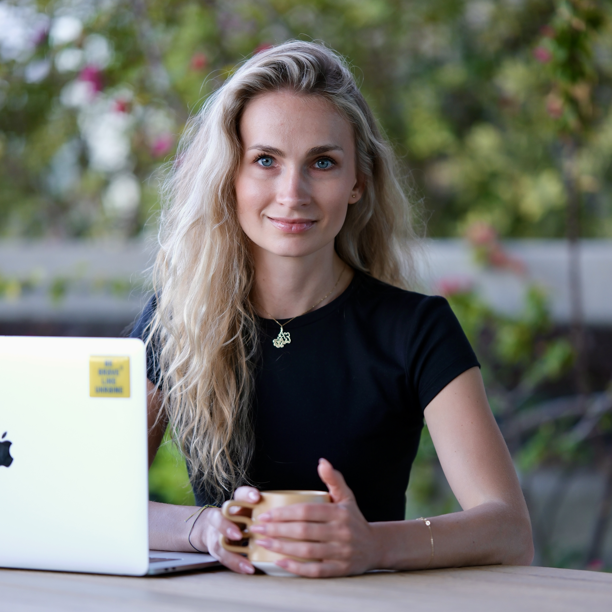

<!DOCTYPE html>
<html lang="en">
<script>
/* ─── Analytics bootstrap ───────────────────────────────────────────────
   Nothing loads unless we are on the live site, so local development and
   preview servers never reach Amplitude or Cloudflare.
   Visiting ?me=1 once marks this browser as internal traffic; every event
   from it then carries traffic_type:"internal" so it can be filtered out.
   ?me=0 clears the flag.                                             ── */
(function () {
  var PROD_HOST   = 'veronikadergal.github.io';
  var AMP_KEY     = '822ea7caff0876e6101bd3b12418c6a1';
  var CF_TOKEN    = '1013d7773edf46438460af3f7cc012cf';

  window.vdTrack = function () {};           /* no-op off production */
  if (location.hostname !== PROD_HOST) return;

  var internal = false;
  try {
    var flag = new URLSearchParams(location.search).get('me');
    if (flag === '1') localStorage.setItem('vd_internal', '1');
    if (flag === '0') localStorage.removeItem('vd_internal');
    internal = localStorage.getItem('vd_internal') === '1';
  } catch (e) {}
  var trafficType = internal ? 'internal' : 'external';

  var amp = document.createElement('script');
  amp.src = 'https://cdn.amplitude.com/script/' + AMP_KEY + '.js';
  amp.onload = function () {
    try {
      window.amplitude.add(window.sessionReplay.plugin({ sampleRate: 1 }));
      window.amplitude.init(AMP_KEY, {
        fetchRemoteConfig: true,
        autocapture: {
          attribution: true, fileDownloads: true, formInteractions: true,
          pageViews: true, sessions: true, elementInteractions: true,
          networkTracking: true, webVitals: true,
          frustrationInteractions: {
            thrashedCursor: true, errorClicks: true,
            deadClicks: true, rageClicks: true
          }
        }
      });
      var ident = new window.amplitude.Identify();
      ident.set('traffic_type', trafficType);
      window.amplitude.identify(ident);

      window.vdTrack = function (name, props) {
        try {
          var payload = { traffic_type: trafficType };
          for (var k in (props || {})) payload[k] = props[k];
          window.amplitude.track(name, payload);
        } catch (e) {}
      };
      (window.vdQueue || []).forEach(function (a) { window.vdTrack(a[0], a[1]); });
      window.vdQueue = [];
    } catch (e) {}
  };
  document.head.appendChild(amp);

  /* queue events fired before Amplitude finishes loading */
  window.vdQueue = [];
  window.vdTrack = function (name, props) { window.vdQueue.push([name, props]); };

  var cf = document.createElement('script');
  cf.defer = true;
  cf.src = 'https://static.cloudflareinsights.com/beacon.min.js';
  cf.setAttribute('data-cf-beacon', '{"token": "' + CF_TOKEN + '"}');
  document.head.appendChild(cf);
})();
</script>
<head>
  <meta charset="UTF-8" />
  <meta name="viewport" content="width=device-width, initial-scale=1.0" />
  <title>Veronika Dergal — Product Manager</title>
  <meta name="description" content="Product manager who takes friction out of work people do every day. Ten years solving problems with and for people, now in product. I build and ship tools with AI and no-code." />
  <meta property="og:title" content="Veronika Dergal — Product Manager" />
  <meta property="og:description" content="Product manager who takes friction out of work people do every day. Ten years solving problems with and for people, now in product. I build and ship tools with AI and no-code." />
  <meta property="og:image" content="https://veronikadergal.github.io/VD-Portfolio/og-image.jpg?v=3" />
  <meta property="og:image:width" content="2400" />
  <meta property="og:image:height" content="1254" />
  <meta property="og:url" content="https://veronikadergal.github.io/VD-Portfolio/" />
  <meta property="og:type" content="website" />
  <meta name="twitter:card" content="summary_large_image" />
  <meta name="twitter:title" content="Veronika Dergal — Product Manager" />
  <meta name="twitter:description" content="Product manager who takes friction out of work people do every day. Ten years solving problems with and for people, now in product. I build and ship tools with AI and no-code." />
  <meta name="twitter:image" content="https://veronikadergal.github.io/VD-Portfolio/og-image.jpg?v=3" />
  <link rel="icon" type="image/png" sizes="64x64" href="favicon.png?v=2" />
  <link rel="apple-touch-icon" sizes="180x180" href="apple-touch-icon.png" />
  <script>
    var t = null; try { t = localStorage.getItem('vd_theme'); } catch (e) {} if (t !== 'light') document.documentElement.classList.add('dark');
  </script>
  <script>
    if ('scrollRestoration' in history) history.scrollRestoration = 'manual';
    window.addEventListener('load', function() { window.scrollTo(0, 0); });
    window.addEventListener('beforeunload', function() { window.scrollTo(0, 0); });
  </script>
  <script src="https://cdn.tailwindcss.com"></script>
  <script>
    tailwind.config = {
      theme: {
        extend: {
          colors: {
            bg:      '#FAF9F7',
            surface: '#FAF9F7',
            'surface-container': '#F4F3F1',
            primary: '#0369a1',
            'primary-light': '#e0f2fe',
            secondary: '#d97706',
            'secondary-light': '#fef3c7',
            'on-surface': '#292524',
            'on-variant': '#57534e',
          },
          fontFamily: {
            headline: ['"Plus Jakarta Sans"', 'sans-serif'],
            body:     ['"Plus Jakarta Sans"', 'sans-serif'],
          },
        },
      },
    }
  </script>
  <link rel="preconnect" href="https://fonts.googleapis.com" />
  <link rel="preconnect" href="https://fonts.gstatic.com" crossorigin />
  <link href="https://fonts.googleapis.com/css2?family=Plus+Jakarta+Sans:wght@400;500;600;700;800&display=swap" rel="stylesheet" />
  <script crossorigin src="https://unpkg.com/react@18.3.1/umd/react.production.min.js"></script>
  <script crossorigin src="https://unpkg.com/react-dom@18.3.1/umd/react-dom.production.min.js"></script>
  <script src="https://unpkg.com/@babel/standalone@8.1.2/babel.min.js"></script>
  <style>
    html {
      scroll-behavior: smooth;
      /* Single gradient spanning the entire document — no section cuts */
      background: linear-gradient(160deg, #FDFCFA 0%, #FAFBFC 55%, #F8F9FC 100%);
      min-height: 100%;
    }
    body { background: transparent; }
    ::selection { background: #e0f2fe; color: #0369a1; }

    .glass { background: rgba(255,255,255,0.5); backdrop-filter: blur(20px); -webkit-backdrop-filter: blur(20px); border: 1px solid rgba(255,255,255,0.65); }
    .blob-bg { filter: blur(80px); pointer-events: none; }
    /* ───────────── Dark mode ("Lights off") ─────────────
       One override layer keyed on html.dark. Light mode is untouched. */
    html.dark { background: linear-gradient(160deg, #161514 0%, #121214 55%, #0F1013 100%); color-scheme: dark; }
    html.dark ::selection { background: #0c4a6e; color: #e0f2fe; }
    html.dark .glass { background: rgba(32,31,30,0.62); border-color: rgba(255,255,255,0.07); }

    /* text */
    html.dark .text-\[\#292524\], html.dark .hover\:text-\[\#292524\]:hover { color: #EDE9E4; }
    html.dark .text-\[\#57534e\] { color: #B5AFA8; }
    html.dark .text-\[\#57534e\]\/85 { color: #A39D96; }
    html.dark .text-\[\#57534e\]\/40 { color: #6F6A64; }
    html.dark .text-primary { color: #5BB6EE; }
    html.dark .text-secondary { color: #F0922B; }
    html.dark [style*="color: rgb(41, 37, 36)"]  { color: #EDE9E4 !important; }
    html.dark [style*="color: rgb(87, 83, 78)"]  { color: #B5AFA8 !important; }
    html.dark [style*="color: rgb(3, 105, 161)"] { color: #5BB6EE !important; }
    html.dark [style*="color: rgb(180, 83, 9)"]  { color: #F5A524 !important; }
    html.dark [style*="color: rgb(217, 119, 6)"] { color: #F0922B !important; }
    html.dark svg text[fill="#292524"] { fill: #EDE9E4; }
    html.dark svg text[fill="#57534e"] { fill: #A39D96; }

    /* surfaces */
    html.dark .bg-\[\#F4F3F1\] { background: #1F1E1C; }
    html.dark [style*="background: rgb(255, 255, 255)"],
    html.dark [style*="background: rgba(255, 255, 255, 0.97)"] { background: #1A1918 !important; }
    html.dark [style*="background: rgba(247, 246, 244, 0.9)"] { background: rgba(10,10,11,0.86) !important; }
    html.dark [style*="background: rgba(87, 83, 78"] { background: rgba(255,255,255,0.06) !important; }

    /* lines */
    html.dark .border-\[\#292524\]\/6, html.dark .border-\[\#292524\]\/8 { border-color: rgba(255,255,255,0.07); }
    html.dark .border-\[\#57534e\]\/20 { border-color: rgba(255,255,255,0.16); }
    html.dark [style*="rgba(41, 37, 36"], html.dark [style*="rgba(87, 83, 78, 0.1"] { border-color: rgba(255,255,255,0.09) !important; }
    html.dark .case-card { box-shadow: 0 2px 16px rgba(0,0,0,0.35); }

    /* screenshot browser frames: a dark browser, not a light frame with a black bar */
    html.dark .tp-chrome  { background: #2A2927 !important; border-bottom-color: rgba(255,255,255,0.06) !important; }
    html.dark .tp-dot     { background: rgba(255,255,255,0.16) !important; }
    html.dark .tp-url     { background: #1F1E1C !important; border-color: rgba(255,255,255,0.07) !important; }
    html.dark .tp-caption { background: #232220 !important; border-top-color: rgba(255,255,255,0.06) !important; }
    html.dark .tp-caption span { color: #8C867F !important; }

    /* the switch itself — a room dimming, not a toggle */
    .lights { font-size: 13px; font-weight: 700; color: #57534e; background: none; border: 0; cursor: pointer;
              display: inline-flex; align-items: center; gap: 7px; padding: 4px 2px; white-space: nowrap; }
    .lights i { width: 8px; height: 8px; border-radius: 50%; background: #F5B53F;
                box-shadow: 0 0 0 3px rgba(245,181,63,0.22), 0 0 10px rgba(245,181,63,0.55); transition: all .5s ease; }
    html.dark .lights { color: #B5AFA8; }
    html.dark .lights i { background: #57534e; box-shadow: none; }
    @media (hover: hover) and (pointer: fine) { .lights:hover { color: #292524; } html.dark .lights:hover { color: #EDE9E4; } }
    html.theme-anim, html.theme-anim *, html.theme-anim *::before, html.theme-anim *::after {
      transition: background-color .6s ease, background .6s ease, color .6s ease, border-color .6s ease, fill .6s ease !important; }


    /* ── Section scroll offset — clears the fixed nav bar on anchor nav ── */
    section { scroll-margin-top: 80px; }

    /* ── Scroll reveal ──
       Elements are visible by default. JS adds .reveal-pending ONLY to
       elements that start below the viewport, preventing blank gaps.    ── */
    .reveal { transition: opacity 0.5s ease-out, transform 0.5s ease-out; }
    .reveal.reveal-pending { opacity: 0; transform: translateY(20px); }
    .reveal.visible { opacity: 1 !important; transform: translateY(0) !important; }

    /* Staggered group children */
    .reveal-group.reveal-pending .ri {
      opacity: 0;
      transform: translateY(20px);
      transition: opacity 0.5s ease-out, transform 0.5s ease-out;
    }
    .reveal-group.visible .ri { opacity:1; transform:none; }
    .reveal-group.visible .ri:nth-child(1) { transition-delay:0s; }
    .reveal-group.visible .ri:nth-child(2) { transition-delay:0.1s; }
    .reveal-group.visible .ri:nth-child(3) { transition-delay:0.2s; }
    .reveal-group.visible .ri:nth-child(4) { transition-delay:0.3s; }
    .reveal-group.visible .ri:nth-child(5) { transition-delay:0.4s; }
    .reveal-group.visible .ri:nth-child(6) { transition-delay:0.5s; }

    /* Tag pill entrance — scale-in when parent card becomes visible */
    @keyframes pillIn { from { opacity:0; transform:scale(0.8); } to { opacity:1; transform:scale(1); } }
    .reveal.visible .pill-tag { opacity:0; animation: pillIn 0.3s ease-out forwards; }
    .reveal.visible .pill-tag:nth-child(1) { animation-delay:0.08s; }
    .reveal.visible .pill-tag:nth-child(2) { animation-delay:0.16s; }
    .reveal.visible .pill-tag:nth-child(3) { animation-delay:0.24s; }

    /* Hero entrance */
    @keyframes fadeInUp { 0% { opacity:0; transform:translateY(20px); } 100% { opacity:1; transform:translateY(0); } }
    .hero-item { opacity:0; animation: fadeInUp 0.6s ease-out forwards; }

    /* Blob / modal animations */
    @keyframes float   { 0%,100% { transform:translateY(0); } 50% { transform:translateY(-14px); } }
    @keyframes blob    { 0%,100% { border-radius:40% 60% 70% 30%/40% 50% 60% 40%; } 50% { border-radius:60% 40% 30% 70%/50% 60% 40% 50%; } }
    @keyframes fadeIn  { from { opacity:0; } to { opacity:1; } }
    @keyframes slideUp { from { opacity:0; transform:translateY(24px); } to { opacity:1; transform:translateY(0); } }

    /* ── Nav link — orange underline slides in from left ── */
    .nav-link { position:relative; }
    .nav-link::after {
      content:''; position:absolute; bottom:-3px; left:0;
      width:0; height:2px; border-radius:1px;
      background:#d97706;
      transition: width 0.2s ease;
    }
    .nav-link:hover::after { width:100%; }

    /* ── Case study card hover ──
       Hover effects are gated behind (hover: hover) so touch devices don't
       keep a "stuck" hover state after a tap. ── */
    /* Each case study has its own colour from the site palette: ReSearchlight blue, Stride orange.
       Hover washes the card in it; the case study opens in the same colour. */
    .case-card {
      position: relative;
      box-shadow: 0 2px 16px rgba(0,0,0,0.07);
      border-color: rgba(41,37,36,0.12) !important;
      transition: box-shadow 0.35s ease, border-color 0.35s ease;
    }
    html.dark .case-card { border-color: rgba(255,255,255,0.11) !important; }
    .case-shot  { transition: transform 0.45s cubic-bezier(0.22,1,0.36,1); }
    .case-arrow { flex-shrink:0; color:#57534e; transition: transform 0.35s cubic-bezier(0.22,1,0.36,1), color 0.35s ease; }
    html.dark .case-arrow { color:#B5AFA8; }
    @media (hover: hover) and (pointer: fine) {
      .case-card:hover .case-shot  { transform: translateY(-4px) scale(1.02); }
      .case-card:hover .case-arrow { transform: translateX(6px); color:#292524; }
      html.dark .case-card:hover .case-arrow { color:#EDE9E4; }
      .case-card.tint-rs:hover     { border-color: rgba(3,105,161,0.35) !important;  box-shadow: 0 2px 16px rgba(0,0,0,0.07), inset 0 0 0 999px rgba(3,105,161,0.05); }
      .case-card.tint-amber:hover  { border-color: rgba(217,119,6,0.35) !important;  box-shadow: 0 2px 16px rgba(0,0,0,0.07), inset 0 0 0 999px rgba(217,119,6,0.05); }
      html.dark .case-card.tint-rs:hover     { border-color: rgba(91,182,238,0.4) !important;  box-shadow: 0 2px 16px rgba(0,0,0,0.35), inset 0 0 0 999px rgba(56,152,214,0.10); }
      html.dark .case-card.tint-amber:hover  { border-color: rgba(240,146,43,0.4) !important;  box-shadow: 0 2px 16px rgba(0,0,0,0.35), inset 0 0 0 999px rgba(240,146,43,0.08); }
    }
    .case-card:focus-visible { outline: 2px solid rgba(87,83,78,0.55); outline-offset: 3px; }
    html.dark .case-card:focus-visible { outline-color: rgba(237,233,228,0.45); }

    .modal-backdrop.tint-rs     { background: rgba(228,240,248,0.92) !important; }
    .modal-backdrop.tint-amber  { background: rgba(250,240,228,0.92) !important; }
    .modal-panel.tint-rs        { background: #F5F9FC !important; }
    .modal-panel.tint-amber     { background: #FCF8F3 !important; }
    .modal-head.tint-rs         { background: rgba(245,249,252,0.97) !important; }
    .modal-head.tint-amber      { background: rgba(252,248,243,0.97) !important; }
    html.dark .modal-backdrop.tint-rs     { background: rgba(5,14,22,0.9) !important; }
    html.dark .modal-backdrop.tint-amber  { background: rgba(22,14,6,0.9) !important; }
    html.dark .modal-panel.tint-rs        { background: #13202A !important; }
    html.dark .modal-panel.tint-amber     { background: #231C15 !important; }
    html.dark .modal-head.tint-rs         { background: rgba(19,32,42,0.97) !important; }
    html.dark .modal-head.tint-amber      { background: rgba(35,28,21,0.97) !important; }

    /* Nav: sliding highlight shows which part you're in */
    .nav-ind { position:absolute; top:0; bottom:0; left:0; width:50%; border-radius:9999px;
      background: rgba(41,37,36,0.07); transition: transform 0.45s cubic-bezier(0.22,1,0.36,1); }
    .nav-ind::before { content:''; position:absolute; top:-1px; left:50%; width:18px; height:2px; margin-left:-9px;
      border-radius:2px; background:#292524; box-shadow: 0 0 8px rgba(41,37,36,0.35); }
    html.dark .nav-ind { background: rgba(255,255,255,0.08); }
    html.dark .nav-ind::before { background:#EDE9E4; box-shadow: 0 0 10px rgba(237,233,228,0.7); }

    /* ── Version card header — same no-sticky-hover treatment ── */
    .release-title { transition: color 0.2s ease; }
    @media (hover: hover) and (pointer: fine) {
      .release-head:hover .release-title { color: #0369a1; }
    }

    /* Lightbulb warm glow animation — keyframe so it fires reliably after a delay */
    @keyframes bulbGlowIn {
      0%   { opacity: 0; }
      15%  { opacity: 0.08; }
      60%  { opacity: 0.75; }
      100% { opacity: 1; }
    }
    @keyframes bulbFilterIn {
      0%   { filter: brightness(0.65) grayscale(1) contrast(1.1); transform: scale(1); }
      20%  { filter: brightness(0.75) grayscale(0.6); transform: scale(1.02); }
      100% { filter: drop-shadow(0 0 6px #ffe066) drop-shadow(0 0 18px #ffd700) brightness(1.3); transform: scale(1.12); }
    }
    .bulb-glow      { opacity: 0; }
    .bulb-glow.lit  { animation: bulbGlowIn 3s ease forwards; }
    .bulb-emoji     { filter: brightness(0.65) grayscale(1) contrast(1.1); transform: scale(1); transition: none; }
    .bulb-emoji.lit { animation: bulbFilterIn 3s ease forwards; animation-fill-mode: forwards; }

    .result-num { font-size:56px; line-height:1; letter-spacing:-0.03em; }
    @media (max-width: 640px) { .result-num { font-size:48px; } }

  </style>
</head>
<body class="font-body text-[#292524] antialiased overflow-x-hidden">
<div id="root"></div>

<script type="text/babel">
const { useState, useEffect, useRef } = React;

/* ─── Analytics helper — no-ops anywhere the bootstrap didn't run ─── */
const track = (name, props) => {
  try { if (window.vdTrack) window.vdTrack(name, props || {}); } catch (e) {}
};

function useReveal() {
  const ref = useRef(null);
  useEffect(() => {
    const el = ref.current;
    if (!el) return;

    // If the element is already in (or above) the viewport on mount,
    // never hide it — just mark visible immediately, no animation needed.
    const rect = el.getBoundingClientRect();
    if (rect.top < window.innerHeight - 20) {
      el.classList.add('visible');
      return;
    }

    // Element is below the fold — hide it and animate it in on scroll.
    el.classList.add('reveal-pending');

    const show = () => {
      el.classList.remove('reveal-pending');
      el.classList.add('visible');
      obs.disconnect();
      clearTimeout(fb);
    };
    const obs = new IntersectionObserver(
      ([e]) => { if (e.isIntersecting) show(); },
      { rootMargin: '0px 0px -20px 0px', threshold: 0 }
    );
    const fb = setTimeout(show, 800); // safety net
    obs.observe(el);
    return () => { obs.disconnect(); clearTimeout(fb); };
  }, []);
  return ref;
}

/* ─── Lights switch ─── */
function LightsSwitch() {
  const [dark, setDark] = useState(() => document.documentElement.classList.contains('dark'));
  const flip = () => {
    const root = document.documentElement;
    const next = !dark;
    root.classList.add('theme-anim');
    root.classList.toggle('dark', next);
    setDark(next);
    try { localStorage.setItem('vd_theme', next ? 'dark' : 'light'); } catch (e) {}
    track('theme_switched', { theme: next ? 'dark' : 'light' });
    setTimeout(() => root.classList.remove('theme-anim'), 700);
  };
  return (
    <button type="button" className="lights" onClick={flip} aria-pressed={dark}
      aria-label={dark ? 'Switch to light mode' : 'Switch to dark mode'}>
      <i aria-hidden="true" />{dark ? 'Lights on' : 'Lights off'}
    </button>
  );
}

/* ─── Nav ─── */
function Nav() {
  const links = [
    { key: 'work',  label: 'Work',  href: '#work'  },
    { key: 'about', label: 'About', href: '#about' },
  ];
  /* Work = everything above About (hero + case studies), About = the rest */
  const [active, setActive] = useState('work');
  useEffect(() => {
    const on = () => {
      const a = document.getElementById('about');
      if (a) setActive(a.getBoundingClientRect().top < window.innerHeight * 0.45 ? 'about' : 'work');
    };
    on();
    window.addEventListener('scroll', on, { passive: true });
    window.addEventListener('resize', on);
    return () => { window.removeEventListener('scroll', on); window.removeEventListener('resize', on); };
  }, []);
  const idx = links.findIndex(l => l.key === active);
  return (
    <nav className="fixed top-4 inset-x-0 z-50 flex justify-center px-4">
      <div className="glass rounded-full shadow-[0_8px_40px_-8px_rgba(3,105,161,0.14)] p-1.5">
        <ul className="relative grid grid-cols-2">
          <span className="nav-ind" aria-hidden="true" style={{transform:`translateX(${idx * 100}%)`}} />
          {links.map(l => (
            <li key={l.key} className="relative">
              <a href={l.href} aria-current={active === l.key ? 'true' : undefined}
                className={'block text-center px-6 py-2 text-[15px] font-semibold transition-colors duration-300 ' + (active === l.key ? 'text-[#292524]' : 'text-[#57534e] hover:text-[#292524]')}>
                {l.label}
              </a>
            </li>
          ))}
        </ul>
      </div>
    </nav>
  );
}

/* ─── Hero ─── */
function Hero() {
  /* one set of facts, one icon each — stacked beside the photo on desktop,
     wrapped onto a row above the CTAs on narrow screens */
  const FACTS = [
    { icon:<><path d="M21 10c0 7-9 13-9 13s-9-6-9-13a9 9 0 0118 0z"/><circle cx="12" cy="10" r="3"/></>,
      label:'London, UK' },
    { icon:<><path d="M22 10L12 5 2 10l10 5 10-5z"/><path d="M6 12v5c0 1 2.7 2.5 6 2.5s6-1.5 6-2.5v-5"/></>,
      label:'BA International Business Management, University of Lincoln, UK' },
    { icon:<><circle cx="12" cy="12" r="9"/><path d="M3 12h18"/><path d="M12 3a14 14 0 000 18 14 14 0 000-18z"/></>,
      label:'Languages: English, Ukrainian' },
  ];
  const facts = inline => (
    <div className={inline ? 'flex flex-wrap gap-x-5 gap-y-2' : 'space-y-2.5 text-left inline-block'}>
      {FACTS.map((f, i) => (
        <p key={i} className="text-[13px] font-semibold text-[#57534e]/85 flex gap-2.5 items-start">
          <svg width="13" height="13" viewBox="0 0 24 24" fill="none" stroke="currentColor"
            strokeWidth="1.9" strokeLinecap="round" strokeLinejoin="round"
            className="flex-shrink-0 mt-[2px] opacity-65">{f.icon}</svg>
          <span>{f.label}</span>
        </p>
      ))}
    </div>
  );
  return (
    <section id="hero" style={{minHeight:'100vh', display:'flex', alignItems:'center', paddingTop:'80px', paddingLeft:'1.5rem', paddingRight:'1.5rem', position:'relative'}}>

      <div className="max-w-4xl mx-auto w-full relative z-10 grid md:grid-cols-12 gap-10 md:gap-8 items-start">

        <div className="md:col-span-8 order-2 md:order-1">
        <h1 className="font-headline text-[1.9rem] sm:text-4xl lg:text-5xl font-extrabold leading-[1.12] tracking-tight text-[#292524] mb-5">
          <span style={{animationDelay:'0.18s'}} className="hero-item block">
            Product manager who takes <span className="text-secondary italic" style={{paddingRight:'0.08em'}}>friction</span> out of work people do every day.
          </span>
        </h1>

        <p style={{animationDelay:'0.4s'}} className="hero-item text-[17px] text-[#57534e] leading-relaxed mb-6 md:mb-10 font-medium">
          Ten years solving problems with and for people, now in product. I build and ship tools with AI and no-code, and work close to the engineers, the people who'll use it, and the people who have to agree.
        </p>

        {/* facts — one quiet line above the CTAs on phones, stacked beside the photo on desktop */}
        <div style={{animationDelay:'0.5s'}} className="hero-item md:hidden mb-8">{facts(true)}</div>

        <div className="flex flex-wrap gap-3">
          {[
            { delay:'0.62s', primary:true , label:'View CV', href:'Veronika_Dergal_PM_CV.pdf', external:true, icon:<svg width="13" height="13" viewBox="0 0 24 24" fill="none" stroke="currentColor" strokeWidth="2.5" strokeLinecap="round" strokeLinejoin="round"><path d="M21 15v4a2 2 0 01-2 2H5a2 2 0 01-2-2v-4"/><polyline points="7 10 12 15 17 10"/><line x1="12" y1="15" x2="12" y2="3"/></svg> },
            { delay:'0.72s', primary:false, label:'Read the case studies', href:'#work', external:false, icon:null },
            { delay:'0.82s', primary:false, label:'Connect on LinkedIn', href:'https://www.linkedin.com/in/veronika-dergal/', external:true, icon:<svg width="14" height="14" viewBox="0 0 24 24" fill="currentColor"><path d="M20.447 20.452h-3.554v-5.569c0-1.328-.027-3.037-1.852-3.037-1.853 0-2.136 1.445-2.136 2.939v5.667H9.351V9h3.414v1.561h.046c.477-.9 1.637-1.85 3.37-1.85 3.601 0 4.267 2.37 4.267 5.455v6.286zM5.337 7.433a2.062 2.062 0 01-2.063-2.065 2.064 2.064 0 112.063 2.065zm1.782 13.019H3.555V9h3.564v11.452zM22.225 0H1.771C.792 0 0 .774 0 1.729v20.542C0 23.227.792 24 1.771 24h20.451C23.2 24 24 23.227 24 22.271V1.729C24 .774 23.2 0 22.222 0h.003z"/></svg> },
          ].map(btn => (
            <a key={btn.label}
              style={{
                animationDelay:btn.delay, opacity:0,
                animation:`fadeInUp 0.6s ease-out ${btn.delay} forwards`,
                transition:'transform 0.3s ease, box-shadow 0.3s ease, border-color 0.3s ease',
                ...(btn.primary
                  ? { boxShadow:'0 16px 40px -10px rgba(3,105,161,0.4)' }
                  : { boxShadow:'0 1px 4px rgba(0,0,0,0.07)' }
                )
              }}
              href={btn.href}
              {...(btn.external ? {target:'_blank',rel:'noopener noreferrer'} : {})}
              className={btn.primary
                ? 'flex items-center gap-2 bg-primary text-white font-bold px-7 py-4 rounded-full text-[15px] active:scale-95'
                : 'flex items-center gap-2 text-[#57534e] font-semibold px-5 py-4 rounded-full border border-[#57534e]/20 text-[15px] active:scale-95'
              }
              onAnimationEnd={e => { e.currentTarget.style.animation = 'none'; e.currentTarget.style.opacity = '1'; }}
              onMouseEnter={e => {
                e.currentTarget.style.transform = 'translateY(-3px)';
                e.currentTarget.style.boxShadow = btn.primary
                  ? '0 20px 50px -10px rgba(3,105,161,0.5)'
                  : '0 8px 24px rgba(0,0,0,0.12)';
              }}
              onMouseLeave={e => {
                e.currentTarget.style.transform = '';
                e.currentTarget.style.boxShadow = btn.primary
                  ? '0 16px 40px -10px rgba(3,105,161,0.4)'
                  : '0 1px 4px rgba(0,0,0,0.07)';
              }}
            >
              {btn.icon}{btn.label}
            </a>
          ))}
        </div>

        </div>

        <div style={{animationDelay:'0.3s'}} className="hero-item md:col-span-4 order-1 md:order-2 flex md:block justify-center md:mt-1">
          <div className="text-center">
            
            <p className="font-headline text-[17px] font-extrabold text-[#292524] mt-4">Veronika Dergal</p>
            <div className="hidden md:block mt-4">{facts(false)}</div>
          </div>
        </div>

      </div>
    </section>
  );
}

/* ─── Shared pill styles — two treatments only, neutral and accent ─── */
const PILL_NEUTRAL = { background:'rgba(87,83,78,0.07)', color:'#57534e', border:'1px solid rgba(41,37,36,0.08)' };
const PILL_ACCENT  = { background:'rgba(217,119,6,0.1)',  color:'#b45309', border:'1px solid rgba(217,119,6,0.22)' };

/* ─── Modal — centered panel with clickable side backdrop ─── */
function Modal({ open, onClose, title, tint, children }) {
  useEffect(() => {
    if (!open) return;
    document.body.style.overflow = 'hidden';
    const onKey = (e) => { if (e.key === 'Escape') onClose(); };
    window.addEventListener('keydown', onKey);
    return () => { document.body.style.overflow = ''; window.removeEventListener('keydown', onKey); };
  }, [open, onClose]);

  if (!open) return null;

  const modal = (
    /* full-screen wrapper — clicking the backdrop (this element) closes */
    <div
      onClick={onClose}
      className={'modal-backdrop ' + (tint ? 'tint-' + tint : '')}
      style={{
        position:'fixed', top:0, left:0, right:0, bottom:0,
        zIndex:9999,
        display:'flex', alignItems:'flex-start', justifyContent:'center',
        background:'rgba(247,246,244,0.9)',
        backdropFilter:'blur(6px)',
        WebkitBackdropFilter:'blur(6px)',
        color:'#292524',
        animation:'fadeIn 0.2s ease both',
        overflowY:'auto',
        padding:'40px 0 80px',
      }}
    >
      {/* the actual panel — stop clicks from bubbling to backdrop */}
      <div
        onClick={e => e.stopPropagation()}
        className={'modal-panel ' + (tint ? 'tint-' + tint : '')}
        style={{
          width:'min(780px, 76vw)',
          flexShrink:0,
          background:'#ffffff',
          borderRadius:'2rem',
          border:'1px solid rgba(41,37,36,0.07)',
          boxShadow:'0 24px 80px -16px rgba(0,0,0,0.16), 0 4px 16px rgba(0,0,0,0.06)',
          overflow:'hidden',
          animation:'slideUp 0.3s cubic-bezier(0.22,1,0.36,1) both',
        }}
      >
        {/* sticky header */}
        <div className={'modal-head ' + (tint ? 'tint-' + tint : '')} style={{
          position:'sticky', top:0,
          background:'rgba(255,255,255,0.97)',
          backdropFilter:'blur(20px)',
          WebkitBackdropFilter:'blur(20px)',
          borderBottom:'1px solid rgba(41,37,36,0.07)',
          padding:'12px 24px',
          display:'flex', alignItems:'center', justifyContent:'space-between',
          zIndex:2,
        }}>
          <span style={{fontSize:10,fontWeight:800,letterSpacing:'0.2em',textTransform:'uppercase',color:'#57534e',opacity:0.5}}>
            {title || 'Case Study'}
          </span>
          <button
            onClick={onClose}
            aria-label="Close"
            style={{
              width:36, height:36, borderRadius:'50%', border:'none', cursor:'pointer',
              background:'rgba(3,105,161,0.08)', color:'#0369a1',
              display:'flex', alignItems:'center', justifyContent:'center',
            }}
          >
            <svg width="14" height="14" viewBox="0 0 24 24" fill="none" stroke="currentColor" strokeWidth="2.5" strokeLinecap="round">
              <line x1="18" y1="6" x2="6" y2="18"/><line x1="6" y1="6" x2="18" y2="18"/>
            </svg>
          </button>
        </div>
        {/* content */}
        <div style={{padding:'36px 40px 60px'}}>
          {children}
        </div>
      </div>
    </div>
  );

  return ReactDOM.createPortal(modal, document.body);
}

/* ─── ReSearchlight screenshot ─── */
function ToolPreview({
  compact,
  maxH    = 160,
  ratio,
  src     = 'researchlight_screenshot.png?v=2',
  alt     = 'ReSearchlight tool — internal researcher screening interface',
  caption = 'Demo mode — researcher names are illustrative',
}) {
  return (
    <div className="rounded-2xl overflow-hidden"
      style={{
        border: '1px solid rgba(0,0,0,0.07)',
        boxShadow: compact
          ? '0 4px 24px -4px rgba(0,0,0,0.12), 0 1px 4px rgba(0,0,0,0.06)'
          : '0 8px 40px -8px rgba(0,0,0,0.14), 0 2px 8px rgba(0,0,0,0.06)',
      }}>
      {/* device chrome bar */}
      <div className="tp-chrome" style={{background:'#f1f1f1', borderBottom:'1px solid rgba(0,0,0,0.07)', padding:'8px 12px', display:'flex', alignItems:'center', gap:6}}>
        <span className="tp-dot" style={{width:10,height:10,borderRadius:'50%',background:'rgba(41,37,36,0.14)',display:'inline-block'}}/>
        <span className="tp-dot" style={{width:10,height:10,borderRadius:'50%',background:'rgba(41,37,36,0.14)',display:'inline-block'}}/>
        <span className="tp-dot" style={{width:10,height:10,borderRadius:'50%',background:'rgba(41,37,36,0.14)',display:'inline-block'}}/>
        <span className="tp-url" style={{flex:1,height:18,background:'#fff',borderRadius:6,border:'1px solid rgba(0,0,0,0.08)',marginLeft:8}}/>
      </div>
      
      {caption && (
        <div className="tp-caption" style={{background:'#f8f8f8', borderTop:'1px solid rgba(0,0,0,0.06)', padding:'6px 12px', textAlign:'center'}}>
          <span style={{fontSize:10, color:'rgba(87,83,78,0.5)', fontWeight:600}}>{caption}</span>
        </div>
      )}
    </div>
  );
}

/* ─── Case Study 1 ─── */
function CaseStudy1() {
  const ref = useReveal();
  const [open, setOpen] = useState(false);
  const openCase = () => { setOpen(true); track('case_study_opened', { case_study: 'ReSearchlight' }); };
  return (
    <>
      <article ref={ref} onClick={openCase} tabIndex={0} role="button" onKeyDown={e => { if (e.key === 'Enter' || e.key === ' ') { e.preventDefault(); openCase(); } }} className="reveal case-card tint-rs glass rounded-[2rem] overflow-hidden group cursor-pointer relative" aria-label="Open the ReSearchlight case study">
        <div className="p-8 sm:p-10 grid md:grid-cols-2 gap-8 md:gap-12 md:items-stretch">
          <div className="flex flex-col">
            <div className="font-headline result-num font-extrabold text-secondary">70%</div>
            <p className="text-[13px] font-semibold text-[#57534e]/85 mt-2">less research time per project</p>
            <h3 className="font-headline text-2xl font-extrabold text-[#292524] mt-6 mb-2 leading-snug">ReSearchlight: from 400 hours to 120</h3>
            <p className="text-[#57534e] text-[15px] leading-relaxed font-medium">
              Built a researcher screening tool — from problem definition to team adoption. Replaced a fragile manual workaround and removed a single-engineer dependency.
            </p>
            <div className="mt-auto pt-6 flex items-center justify-between gap-4">
              <p className="text-[13px] font-semibold text-[#57534e]/85">Internal tool · 2024–25</p>
              <svg className="case-arrow" width="22" height="22" viewBox="0 0 24 24" fill="none" stroke="currentColor" strokeWidth="2" strokeLinecap="round" strokeLinejoin="round" aria-hidden="true"><path d="M4 12h16M14 6l6 6-6 6"/></svg>
            </div>
          </div>
          <div className="case-shot md:self-center">
            <ToolPreview compact={true} ratio="2000 / 1403" />
          </div>
        </div>
      </article>

      <Modal open={open} onClose={() => setOpen(false)} title="ReSearchlight" tint="rs">
        <div className="space-y-10 text-[15px] leading-relaxed">

          {/* ── Header ── */}
          <div>
            <div className="flex flex-wrap gap-2 mb-3">
              <span className="px-4 py-1.5 rounded-full text-[11px] font-extrabold uppercase tracking-[0.18em]" style={PILL_NEUTRAL}>Internal Tool</span>
              <span className="px-4 py-1.5 rounded-full text-[11px] font-extrabold uppercase tracking-[0.18em]" style={PILL_NEUTRAL}>2024–25</span>
              <span className="px-3 py-1.5 rounded-full text-[11px] font-extrabold uppercase tracking-[0.18em]" style={PILL_ACCENT}>70% time saved</span>
            </div>
            <h2 className="font-headline text-3xl sm:text-4xl font-extrabold text-[#292524] mt-2 mb-1 leading-tight">ReSearchlight: from 400 hours to 120</h2>
            <p className="text-[#57534e] text-[17px] font-medium mt-2">How I defined the right problem, built the right tool, and designed for how people actually work — not the happy path.</p>
            <p className="text-[13px] font-semibold text-[#57534e]/85 mt-4 pt-4" style={{borderTop:'1px solid rgba(41,37,36,0.07)'}}>
              PM in V1, builder in V2 · 2024–25 · Lovable, SerpAPI, Excel
            </p>
          </div>

          {/* ── Context ── */}
          <div>
            <p className="text-[11px] font-extrabold uppercase tracking-[0.18em] text-secondary mb-3">Context</p>
            <p className="text-[13px] font-extrabold uppercase tracking-[0.18em] text-[#292524] mb-3">The Problem Worth Solving</p>
            <p className="text-[#57534e] font-medium mb-4">I was working in executive search, running projects to identify senior academic leaders for UK universities. One project type kept creating a bottleneck: identifying researchers using publication data.</p>
            <p className="text-[#57534e] font-medium mb-4">The task sounds straightforward — check whether a researcher has published in high-impact journals relevant to a role. In practice, it meant opening hundreds of Google Scholar profiles one by one, hunting for papers that met a very specific set of criteria: journal tier, recency, whether the researcher was a lead author, and whether the publication was original research (not a review or conference paper). With a longlist of ~5,000 researchers at roughly five minutes each, that is an estimated 400 hours of manual checking per project.</p>
            <blockquote className="border-l-2 border-primary/30 pl-4 text-[#57534e]/85 italic font-medium">
              "The real problem wasn't the volume. It was that the criteria were complex and context-dependent — and that complexity was locked inside people's heads, not a system."
            </blockquote>
          </div>

          {/* ── Screenshot ── */}
          <ToolPreview compact={false} />

          {/* ── Problem Framing ── */}
          <div>
            <p className="text-[11px] font-extrabold uppercase tracking-[0.18em] text-secondary mb-3">Problem Framing</p>
            <p className="text-[13px] font-extrabold uppercase tracking-[0.18em] text-[#292524] mb-3">Defining the Right Requirements</p>
            <p className="text-[#57534e] font-medium mb-5">Before building anything, I had to translate months of implicit knowledge into explicit, testable logic. The most important piece was what I called a <strong className="text-[#292524]">scenario tree</strong>: a structured decision framework mapping every meaningful case the tool might encounter.</p>

            {/* Scenario tree visual */}
            <div className="rounded-2xl overflow-hidden mb-5" style={{border:'1px solid rgba(3,105,161,0.1)'}}>
              <div className="px-4 py-3" style={{background:'rgba(3,105,161,0.06)'}}>
                <p className="text-[11px] font-extrabold uppercase tracking-[0.18em] text-primary">Scenario Tree — Edge Cases Mapped</p>
              </div>
              {[
                { q: 'Is this journal tier-appropriate?', eg: 'Nature flagship vs Nature subsidiary journals' },
                { q: 'Is the researcher lead author?', eg: 'Position requirements vary by seniority level' },
                { q: 'Is this original research?', eg: 'Excludes reviews, book chapters, conference papers' },
                { q: 'Is the author list complete?', eg: 'SerpAPI truncates lists on high-contributor papers — documented as constraint' },
              ].map((item, i) => (
                <div key={i} className="flex gap-3 px-4 py-3 items-start" style={{borderTop:'1px solid rgba(3,105,161,0.07)'}}>
                  <span className="mt-0.5 flex-shrink-0 w-5 h-5 rounded-full bg-primary/10 flex items-center justify-center text-[11px] font-extrabold text-primary">{i+1}</span>
                  <div>
                    <p className="text-[15px] font-bold text-[#292524]">{item.q}</p>
                    <p className="text-[13px] text-[#57534e]/85 mt-0.5">{item.eg}</p>
                  </div>
                </div>
              ))}
            </div>
            <p className="text-[#57534e] font-medium italic text-[13px]">Writing the scenario tree was the moment the project became a product problem rather than a tech problem.</p>
          </div>

          {/* ── Building & Iteration ── */}
          <div>
            <p className="text-[11px] font-extrabold uppercase tracking-[0.18em] text-secondary mb-3">Building &amp; Iteration</p>
            <p className="text-[13px] font-extrabold uppercase tracking-[0.18em] text-[#292524] mb-3">Version 1 → Version 2: What Changed</p>
            <p className="text-[#57534e] font-medium mb-5">V1 — built by my engineer friend, with me in a PM capacity (requirements, testing, feedback) — proved the concept. But when he travelled abroad, the dependency broke. V2 was my answer: a version the team could own.</p>

            <div className="grid grid-cols-1 sm:grid-cols-2 gap-3 mb-5">
              <div className="rounded-2xl p-4" style={{background:'rgba(87,83,78,0.05)', border:'1px solid rgba(87,83,78,0.1)'}}>
                <p className="text-[11px] font-extrabold uppercase tracking-[0.18em] text-[#57534e]/85 mb-3">V1 — Engineer built, me as PM</p>
                <ul className="space-y-2 text-[13px] text-[#57534e] font-medium">
                  <li className="flex gap-2"><span className="text-[#57534e]/40 mt-0.5">✕</span>Manual webscraper, throttled</li>
                  <li className="flex gap-2"><span className="text-[#57534e]/40 mt-0.5">✕</span>Required engineer availability</li>
                  <li className="flex gap-2"><span className="text-[#57534e]/40 mt-0.5">✕</span>Fragile, not scalable</li>
                  <li className="flex gap-2"><span className="text-[#57534e]/40 mt-0.5">✕</span>Single point of failure</li>
                </ul>
              </div>
              <div className="rounded-2xl p-4" style={{background:'rgba(3,105,161,0.05)', border:'1px solid rgba(3,105,161,0.12)'}}>
                <p className="text-[11px] font-extrabold uppercase tracking-[0.18em] text-primary mb-3">V2 — Built by me</p>
                <ul className="space-y-2 text-[13px] text-[#292524] font-medium">
                  <li className="flex gap-2"><span className="text-primary mt-0.5">✓</span>SerpAPI — legitimate, structured</li>
                  <li className="flex gap-2"><span className="text-primary mt-0.5">✓</span>Team runs independently</li>
                  <li className="flex gap-2"><span className="text-primary mt-0.5">✓</span>Batches of 200 profiles</li>
                  <li className="flex gap-2"><span className="text-primary mt-0.5">✓</span>Built &amp; owned by non-engineer</li>
                </ul>
              </div>
            </div>

            <p className="text-[#57534e] font-medium mb-3">The most consequential decision in V2 was identifying SerpAPI as the data layer — a legitimate, structured API for extracting publication data from Scholar profiles at scale. This was my first time independently integrating an external API, configured entirely through Lovable.</p>
            <p className="text-[#57534e] font-medium">I built iteratively, treating each run as a test. After each batch I compared outputs against a manually-checked gold-standard sample. I also prepared a specific set of tricky cases — conference papers, reviews, ambiguous author positions. <strong className="text-[#292524]">QA wasn't a phase at the end. It was the feedback loop that shaped every iteration.</strong></p>
          </div>

          {/* ── Outcome ── */}
          <div>
            <p className="text-[11px] font-extrabold uppercase tracking-[0.18em] text-secondary mb-3">Outcome</p>
            <p className="text-[13px] font-extrabold uppercase tracking-[0.18em] text-[#292524] mb-3">Adoption &amp; Results</p>
            <p className="text-[#57534e] font-medium mb-5">I shipped the working version immediately before a one-week holiday — a deliberate decision to force a real test of independence. They ran it successfully without me. What previously required manually opening each Google Scholar profile became: assemble a CSV, upload, wait 10–15 minutes, review results.</p>

            <div className="grid grid-cols-1 sm:grid-cols-2 gap-3 mb-5">
              <div className="rounded-2xl p-4" style={{background:'rgba(87,83,78,0.05)'}}>
                <p className="text-[11px] font-extrabold text-[#57534e]/85 uppercase tracking-[0.18em] mb-3">Before</p>
                <ul className="space-y-2 text-[#57534e] text-[13px] font-medium">
                  <li>~400 hrs manual checking per project</li>
                  <li>Dependent on engineer's availability</li>
                  <li>Criteria implicit, not documented</li>
                  <li>Single point of failure</li>
                </ul>
              </div>
              <div className="rounded-2xl p-4" style={{background:'rgba(3,105,161,0.06)', border:'1px solid rgba(3,105,161,0.1)'}}>
                <p className="text-[11px] font-extrabold text-primary uppercase tracking-[0.18em] mb-3">After</p>
                <ul className="space-y-2 text-[#292524] text-[13px] font-medium">
                  <li>~120 hrs — <strong>70% reduction</strong></li>
                  <li>Team ran independently from day one</li>
                  <li>Logic explicit, documented, testable</li>
                  <li>Batches of 200 profiles in ~15 mins</li>
                </ul>
              </div>
            </div>

            <blockquote className="border-l-2 border-secondary/40 pl-4 text-[#57534e]/85 italic font-medium">
              "The bottleneck shifted from 'can we do this?' to 'how quickly can we prepare the input file?'"
            </blockquote>
          </div>

          {/* ── Reflection ── */}
          <div>
            <p className="text-[11px] font-extrabold uppercase tracking-[0.18em] text-secondary mb-3">Reflection</p>
            <p className="text-[13px] font-extrabold uppercase tracking-[0.18em] text-[#292524] mb-3">What This Taught Me About Product Thinking</p>
            <p className="text-[#57534e] font-medium mb-4">The most PM-relevant part of this project wasn't the building — it was the problem framing. The team had been doing manual research for months. The pain was visible. But nobody had sat down to define what 'good' looked like in a form precise enough to build against.</p>
            <p className="text-[#57534e] font-medium mb-5">The limitations I couldn't fully resolve taught me something equally important: shipping with known constraints is a product decision, not a failure. Documenting them explicitly, designing the workflow around them, and being transparent with the team about what the tool would and wouldn't do — that's what made it trustworthy enough to actually get used.</p>

            {/* V3 future vision */}
            <div className="rounded-2xl p-5" style={{background:'rgba(3,105,161,0.04)', border:'1px solid rgba(3,105,161,0.12)'}}>
              <p className="text-[11px] font-extrabold uppercase tracking-[0.18em] mb-3" style={{color:'#0369a1'}}>If I were building V3 today</p>
              <ul className="space-y-2.5">
                {[
                  'Add a confidence scoring layer visible in the results table — so reviewers can prioritise their attention on uncertain cases rather than skimming everything equally.',
                  'Formalise the test suite so any logic update can be regression-tested against the gold-standard sample before shipping.',
                  'Build a feedback loop where manual corrections to the review tab inform future runs — closing the loop between human judgement and automated output.',
                  'Explore whether SerpAPI\'s author list truncation can be mitigated through multi-step enrichment — fetching additional data passes for papers where the full author list matters.',
                ].map((item, i) => (
                  <li key={i} className="flex gap-3 text-[15px] text-[#57534e] font-medium">
                    <span className="flex-shrink-0 mt-1 w-1.5 h-1.5 rounded-full" style={{background:'rgba(3,105,161,0.4)'}} />
                    {item}
                  </li>
                ))}
              </ul>
            </div>
          </div>

          {/* ── Skills ── */}
          <div>
            <p className="text-[11px] font-extrabold uppercase tracking-[0.18em] text-[#57534e]/85 mb-3">Skills Demonstrated</p>
            <div className="flex flex-wrap gap-2">
              {['Problem framing','Requirements definition','Scenario tree / PRD','QA methodology','Human-in-the-loop design','API integration (no code)','Stakeholder adoption'].map(s => (
                <span key={s} className="px-3 py-1.5 rounded-full text-[13px] font-bold text-[#57534e]" style={{background:'rgba(87,83,78,0.07)', border:'1px solid rgba(41,37,36,0.08)'}}>{s}</span>
              ))}
            </div>
          </div>

          {/* ── Micro-CTA — one line, two quiet links ── */}
          <p className="text-[15px] text-[#57534e] font-medium pt-5" style={{borderTop:'1px solid rgba(41,37,36,0.08)'}}>
            Want to discuss automation workflows or see the detailed scenario tree?{' '}
            <a href="https://calendly.com/veronikadergal/new-meeting" target="_blank" rel="noopener noreferrer"
              className="text-primary font-bold underline underline-offset-2 hover:opacity-70 transition-opacity">Book a chat</a>
            {' or '}
            <a href="mailto:dergalv@gmail.com"
              className="text-primary font-bold underline underline-offset-2 hover:opacity-70 transition-opacity">send me a message</a>.
          </p>

        </div>
      </Modal>
    </>
  );
}

/* ─── Case Study 2 ─── */
function CaseStudy2() {
  const ref = useReveal();
  const [open, setOpen] = useState(false);
  const openCase = () => { setOpen(true); track('case_study_opened', { case_study: 'Stride' }); };
  return (
    <>
      <article ref={ref} onClick={openCase} tabIndex={0} role="button" onKeyDown={e => { if (e.key === 'Enter' || e.key === ' ') { e.preventDefault(); openCase(); } }} className="reveal case-card tint-amber glass rounded-[2rem] overflow-hidden group cursor-pointer relative" aria-label="Open the Stride case study">
        <div className="p-8 sm:p-10 grid md:grid-cols-2 gap-8 md:gap-12 md:items-stretch">
          <div className="flex flex-col">
            <div className="font-headline result-num font-extrabold text-secondary">4 weeks</div>
            <p className="text-[13px] font-semibold text-[#57534e]/85 mt-2">from idea to shipped product</p>
            <h3 className="font-headline text-2xl font-extrabold text-[#292524] mt-6 mb-2 leading-snug">Stride: zero to live in four weeks</h3>
            <p className="text-[#57534e] text-[15px] leading-relaxed font-medium">
              A weekly execution engine connecting life vision to quarterly OKRs to this week's tasks. Built solo and tested with five beta users.
            </p>
            <div className="mt-auto pt-6 flex items-center justify-between gap-4">
              <p className="text-[13px] font-semibold text-[#57534e]/85">B2C app · 2026</p>
              <svg className="case-arrow" width="22" height="22" viewBox="0 0 24 24" fill="none" stroke="currentColor" strokeWidth="2" strokeLinecap="round" strokeLinejoin="round" aria-hidden="true"><path d="M4 12h16M14 6l6 6-6 6"/></svg>
            </div>
          </div>
          <div className="case-shot md:self-center">
            <ToolPreview
              compact={true}
              ratio="2000 / 1403"
              src="stride_screenshot.webp?v=2"
              alt="Stride — goal planning app"
              caption="stridehq.app"
            />
          </div>
        </div>
      </article>

      <Modal open={open} onClose={() => setOpen(false)} title="Stride" tint="amber">
        <div className="space-y-8 text-[15px] leading-relaxed">

          {/* ── Header ── */}
          <div>
            <div className="flex flex-wrap gap-2 mb-3">
              <span className="px-4 py-1.5 rounded-full text-[11px] font-extrabold uppercase tracking-[0.18em]" style={PILL_NEUTRAL}>B2C App</span>
              <span className="px-4 py-1.5 rounded-full text-[11px] font-extrabold uppercase tracking-[0.18em]" style={PILL_NEUTRAL}>2026</span>
              <span className="px-4 py-1.5 rounded-full text-[11px] font-extrabold uppercase tracking-[0.18em]" style={PILL_ACCENT}>Shipped</span>
            </div>
            <h2 className="font-headline text-3xl font-extrabold text-[#292524] mt-2 mb-1">Stride: zero to live in four weeks</h2>
            <p className="text-[#57534e] text-[17px] font-medium">Weekly execution engine: life vision → quarterly OKRs → this week's tasks</p>
            <p className="text-[13px] font-semibold text-[#57534e]/85 mt-4 pt-4" style={{borderTop:'1px solid rgba(41,37,36,0.07)'}}>
              Side project · 2026 · Lovable, Supabase, Claude · <a href="https://stridehq.app" target="_blank" rel="noopener noreferrer" className="text-primary hover:opacity-70 transition-opacity underline underline-offset-2">stridehq.app</a>
            </p>
          </div>

          {/* ── Context ── */}
          <div>
            <p className="text-[11px] font-extrabold uppercase tracking-[0.18em] text-secondary mb-3">A Gap Before the Gap</p>
            <p className="text-[#57534e] font-medium mb-3">Every goal-setting tool I tried had the same flaw: it was built for people who already knew what they wanted.</p>
            <p className="text-[#57534e] font-medium">When I decided to pivot into product management, I tried to map out where I actually wanted to go — not next month's tasks, the bigger picture. I tried Excel templates, Asana's personal goals tab, Notion. All of them assumed I already had goals figured out. None helped me arrive at the goals in the first place. The gap wasn't between vision and weekly tasks. It was earlier: between wanting clarity and knowing how to get there.</p>
          </div>

          {/* ── Discovery ── */}
          <div>
            <p className="text-[11px] font-extrabold uppercase tracking-[0.18em] text-secondary mb-3">Discovery — Three Interviews Before I Told Anyone What I Was Building</p>
            <p className="text-[#57534e] font-medium mb-4">Following The Mom Test — avoid announcing what you're building, because people will try to help rather than tell the truth — I spoke with three people who each had some relationship with goal-setting. I didn't mention Stride at all.</p>
            <p className="text-[#57534e] font-medium mb-3">After the interviews I showed people what I'd built. The feedback was immediate: too much. The wheel of life, monthly tracking, weekly focus reviews — cut. What people needed was simpler: clarity on where they're going and a direct line to this week's tasks.</p>
            <p className="text-[#57534e] font-medium mb-5">The hardest product lesson: not treating the app as my baby. Hearing "this is too much" and responding with curiosity rather than defensiveness.</p>

            {/* Persona Cards */}
            <div className="grid grid-cols-1 sm:grid-cols-3 gap-4">
              {[
                {
                  archetype: 'The Systems Builder',
                  role: 'Engineer · 6 years of structured goal-setting',
                  pill: 'Target user',
                  pillBg: 'rgba(3,105,161,0.1)', pillColor: '#0369a1',
                  borderColor: '#0369a1',
                  system: ['Quarterly OKRs in Google Sheets', 'Weekly tasks in a separate work tool', 'Manual bridge between the two every Monday'],
                  frustration: 'Strategy and execution live in different places with nothing connecting them.',
                  quote: '"There\'s no connection between operational planning and strategic planning — why doesn\'t the system schedule time to actually do the work?"',
                  why: 'Validated that the strategy-execution gap is painful enough to pay to solve, even for someone with a sophisticated existing system.',
                },
                {
                  archetype: 'The Visual Planner',
                  role: 'UX Researcher · Intuitive, multi-tool system',
                  pill: 'Validates problem / won\'t pay',
                  pillBg: 'rgba(180,83,9,0.1)', pillColor: '#b45309',
                  borderColor: '#d97706',
                  system: ['Quarterly intentions in analog notebook', 'Mood boards on Pinterest', 'Tasks split across Notion and Todoist'],
                  frustration: 'Vision lives in her head and notebook; tasks live in apps. Nothing connects them.',
                  quote: '"I want a vision that flows into goals, then cascades into tasks — connected, all the way down."',
                  why: 'Articulated the exact value proposition unprompted. Confirmed the problem but ruled herself out as a paying user due to strong Notion loyalty — a product constraint worth knowing early.',
                },
                {
                  archetype: 'The System Abandoner',
                  role: 'Creative professional · Chronic system abandoner',
                  pill: 'Not target user',
                  pillBg: 'rgba(120,60,60,0.08)', pillColor: '#9f3a3a',
                  borderColor: '#c47070',
                  system: ['Notes app (rarely revisited)', 'Has tried: Excel, Trello, habit trackers, calendar blocking', 'Only thing that works: weekly external accountability call'],
                  frustration: 'Ambitious planning for two days, then complete abandonment — every time.',
                  quote: '"The problem isn\'t that there\'s a missing feature. The problem is somewhere else. I honestly don\'t know where."',
                  why: 'Confirmed that Stride is not for people whose relationship with productivity is fundamentally broken. Knowing who you\'re not building for is a product decision.',
                },
              ].map((p, i) => (
                <div key={i} className="rounded-2xl p-4 flex flex-col gap-3 bg-[#F4F3F1]"
                  style={{borderLeft:`3px solid ${p.borderColor}`}}>
                  <div>
                    <p className="text-[11px] font-extrabold uppercase tracking-[0.18em] text-[#57534e]/85 mb-0.5">{p.archetype}</p>
                    <p className="text-[13px] text-[#57534e]/85 font-medium">{p.role}</p>
                  </div>

                  <div>
                    <p className="text-[11px] font-extrabold uppercase tracking-[0.18em] text-[#57534e]/85 mb-1.5">Current system</p>
                    <ul className="space-y-1">
                      {p.system.map((s, j) => (
                        <li key={j} className="flex gap-2 text-[13px] text-[#57534e] font-medium">
                          <span className="mt-1.5 w-1 h-1 rounded-full flex-shrink-0" style={{background:p.borderColor}} />
                          {s}
                        </li>
                      ))}
                    </ul>
                  </div>

                  <p className="text-[13px] text-[#57534e]/85 italic font-medium leading-snug">{p.frustration}</p>

                  <p className="text-[13px] text-[#292524] font-semibold leading-snug">{p.quote}</p>

                  <p className="text-[11px] text-[#57534e]/85 font-medium leading-snug border-t border-[#292524]/6 pt-2">{p.why}</p>

                  <span className="self-start px-2.5 py-1 rounded-full text-[11px] font-extrabold uppercase tracking-[0.18em]"
                    style={{background:p.pillBg, color:p.pillColor}}>{p.pill}</span>
                </div>
              ))}
            </div>
          </div>

          {/* ── Building ── */}
          <div>
            <p className="text-[11px] font-extrabold uppercase tracking-[0.18em] text-secondary mb-3">Building &amp; Iteration — Stripping Back to What Actually Matters</p>
            <p className="text-[#57534e] font-medium mb-4">The version that exists today is three tiers. The North Star isn't a text field — it's an exercise in clarity. The AI flow asks five questions I designed to help someone articulate a life vision even if they've never done this before, then distils the answers into a statement they can regenerate until it resonates. Built in four weeks using Lovable and Supabase, alongside certification coursework. I handled everything: product design, build, infrastructure, beta user management.</p>

            <div className="bg-[#F4F3F1] rounded-2xl p-5">
              <p className="text-[11px] font-extrabold uppercase tracking-[0.18em] text-[#57534e]/85 mb-4">The framework</p>
              <div className="space-y-2">
                {[
                  { n:'01', label:'North Star', desc:'Self-written or AI-guided — 5 questions that help you articulate a life vision even if you\'ve never done this before', bg:'#0369a1' },
                  { n:'02', label:'Objectives & Key Results', desc:'Quarterly goal tracking — the middle layer that translates vision into measurable targets', bg:'#b45309' },
                  { n:'03', label:'Weekly Tasks', desc:'P0 (must happen) · P1 (important) · P2 (optional) — derived from the OKRs above them', bg:'#57534e' },
                ].map((t, i) => (
                  <div key={i} className="rounded-2xl px-4 py-3 flex gap-4 items-start text-white" style={{background:t.bg}}>
                    <span className="text-[11px] font-bold opacity-40 mt-0.5 flex-shrink-0">{t.n}</span>
                    <div>
                      <p className="font-bold text-[15px]">{t.label}</p>
                      <p className="text-[13px] opacity-60 mt-0.5 font-medium">{t.desc}</p>
                    </div>
                  </div>
                ))}
              </div>
            </div>
          </div>

          {/* ── QA Cycle ── */}
          <div>
            <p className="text-[11px] font-extrabold uppercase tracking-[0.18em] text-secondary mb-3">QA Cycle — Onboarding Reliability</p>
            <p className="text-[#57534e] font-medium mb-4">Ran 3 structured QA sessions over 24 hours. Session 1 identified a critical bug blocking 100% of new signups — root cause: an auth configuration mismatch causing a silent frontend failure with no user-facing error.</p>

            <div className="space-y-3 mb-4">
              {[
                { n:'1', color:'#dc2626', bg:'rgba(220,38,38,0.06)', border:'rgba(220,38,38,0.14)', label:'Critical bug found', desc:'100% of new signups blocked. Silent failure — no error shown to user. Root cause traced to auth configuration mismatch.' },
                { n:'2', color:'#d97706', bg:'rgba(217,119,6,0.06)', border:'rgba(217,119,6,0.14)', label:'Fix in test', desc:'Diagnosed and resolved. Re-tested across all 3 onboarding paths: full completion, partial skip, skip-all.' },
                { n:'3', color:'#059669', bg:'rgba(5,150,105,0.06)', border:'rgba(5,150,105,0.14)', label:'All paths passing', desc:'Every onboarding route confirmed clean. Defensive error handling added: 10-second timeouts + three-branch signup logic to prevent future silent failures.' },
              ].map((s, i) => (
                <div key={i} className="rounded-2xl p-4 flex gap-4 items-center" style={{background:s.bg, border:`1px solid ${s.border}`}}>
                  <span className="flex-shrink-0 font-headline font-extrabold text-[15px] flex items-center justify-center rounded-full"
                    style={{width:30, height:30, color:s.color, border:`1.5px solid ${s.color}`}} aria-label={`Step ${s.n}`}>{s.n}</span>
                  <div>
                    <p className="text-[13px] font-bold text-[#292524] mb-0.5">{s.label}</p>
                    <p className="text-[13px] text-[#57534e] font-medium leading-snug">{s.desc}</p>
                  </div>
                </div>
              ))}
            </div>

            <div className="rounded-2xl p-4" style={{background:'rgba(3,105,161,0.05)', border:'1px solid rgba(3,105,161,0.12)'}}>
              <p className="text-[11px] font-extrabold uppercase tracking-[0.18em] text-primary mb-2">Defensive patterns shipped</p>
              <ul className="space-y-1.5">
                {['10-second auth timeout — surfaces errors instead of hanging silently','Three-branch signup logic — handles success, timeout, and unexpected failure as distinct states','QA across all user paths before each release — full completion, partial skip, skip-all'].map((item, i) => (
                  <li key={i} className="flex gap-2 text-[13px] text-[#57534e] font-medium">
                    <span className="text-primary flex-shrink-0">→</span>{item}
                  </li>
                ))}
              </ul>
            </div>
          </div>

          {/* ── What I'm Learning ── */}
          <div>
            <p className="text-[11px] font-extrabold uppercase tracking-[0.18em] text-secondary mb-3">What I'm Learning — Honest Beta Feedback</p>
            <p className="text-[#57534e] font-medium mb-4">Stride has five beta users. Most went through onboarding and didn't return — a real signal worth understanding, not minimising. Two things are driving it: no notification system (browser-only, no habit trigger), and onboarding that asks too much too soon. One user said directly: too much typing before she'd seen enough to know it was worth the effort. Another found the OKR distinction unclear despite example text.</p>
            <p className="text-[#57534e] font-medium mb-4">Low retention with minimal promotion and no notifications isn't a verdict. It's a diagnosis. The job is to fix the specific things breaking the loop.</p>
            <p className="text-[#57534e] font-medium mb-4">I'm not a daily user either — at this stage a paper notebook does the job better for me. That's the same thing the beta users said.</p>

            <div className="grid sm:grid-cols-2 gap-3">
              <div className="rounded-2xl p-4" style={{background:'rgba(3,105,161,0.05)', border:'1px solid rgba(3,105,161,0.12)'}}>
                <p className="text-[11px] font-extrabold uppercase tracking-[0.18em] text-primary mb-2">What's working</p>
                <ul className="space-y-1.5">
                  {['Users who completed onboarding understood what they\'d built','The AI North Star flow was positively received — one user said she\'d never been able to articulate her vision that clearly before'].map((s, i) => (
                    <li key={i} className="flex gap-2 text-[13px] text-[#57534e] font-medium">
                      <span className="text-primary flex-shrink-0">✓</span>{s}
                    </li>
                  ))}
                </ul>
              </div>
              <div className="rounded-2xl p-4" style={{background:'rgba(180,83,9,0.05)', border:'1px solid rgba(180,83,9,0.12)'}}>
                <p className="text-[11px] font-extrabold uppercase tracking-[0.18em] mb-2" style={{color:'#b45309'}}>Backlog</p>
                <ul className="space-y-1.5">
                  {['Minimum viable input — progressive disclosure','Inline OKR coaching on objective vs key result','Activate email reminders via Resend','Explore mobile-optimised experience'].map((s, i) => (
                    <li key={i} className="flex gap-2 text-[13px] text-[#57534e] font-medium">
                      <span className="flex-shrink-0" style={{color:'#b45309'}}>→</span>{s}
                    </li>
                  ))}
                </ul>
              </div>
            </div>
          </div>

          {/* ── Reflection ── */}
          <div>
            <p className="text-[11px] font-extrabold uppercase tracking-[0.18em] text-secondary mb-3">Reflection</p>
            <p className="text-[#57534e] font-medium mb-3">The most valuable lesson wasn't technical. It was learning to separate my attachment to what I'd built from what the product actually needed. The first version had features I was proud of that nobody wanted. Cutting them felt like loss. It wasn't — it was the job.</p>
            <p className="text-[#57534e] font-medium">Stride is live, and I know what it would take to make it work: an AI layer that moves it from a container you fill in to a coach that helps you think. What I took from building it is the practice — shipping something end to end on my own, putting it in front of people, and being honest about what the numbers said.</p>
          </div>

          {/* ── Skills ── */}
          <div>
            <p className="text-[11px] font-extrabold uppercase tracking-[0.18em] text-secondary mb-3">Skills Demonstrated</p>
            <div className="flex flex-wrap gap-2">
              {['Mom Test discovery interviews','0→1 solo build','Feature prioritisation under constraint','Onboarding UX design','AI prompt & flow design','Beta user management','Structured QA methodology','Defensive error handling','Lovable + Supabase (no code)'].map(s => (
                <span key={s} className="px-3 py-1.5 rounded-full text-[13px] font-bold bg-[#F4F3F1] text-[#57534e] border border-[#292524]/8">{s}</span>
              ))}
            </div>
          </div>

          {/* ── Micro-CTA — one line, two quiet links ── */}
          <p className="text-[15px] text-[#57534e] font-medium pt-5" style={{borderTop:'1px solid rgba(41,37,36,0.08)'}}>
            Want to try Stride or hear about the beta user feedback?{' '}
            <a href="https://calendly.com/veronikadergal/new-meeting" target="_blank" rel="noopener noreferrer"
              className="text-primary font-bold underline underline-offset-2 hover:opacity-70 transition-opacity">Book a chat</a>
            {' or '}
            <a href="mailto:dergalv@gmail.com"
              className="text-primary font-bold underline underline-offset-2 hover:opacity-70 transition-opacity">send me a message</a>.
          </p>

          <a href="https://stridehq.app" target="_blank" rel="noopener noreferrer"
            className="inline-flex items-center gap-2 px-6 py-3.5 bg-secondary text-white rounded-full text-[15px] font-bold hover:opacity-90 transition-opacity shadow-[0_8px_24px_-6px_rgba(217,119,6,0.4)]">
            View live product — stridehq.app
            <svg width="14" height="14" viewBox="0 0 24 24" fill="none" stroke="currentColor" strokeWidth="2.5"><path d="M7 17L17 7M17 7H7M17 7v10"/></svg>
          </a>

        </div>
      </Modal>
    </>
  );
}

/* ─── Work ─── */
function Work() {
  const ref = useReveal();
  return (
    <section id="work" className="py-16 sm:py-20 px-6 relative overflow-hidden">
      <div className="max-w-4xl mx-auto relative z-10">
        <div ref={ref} className="reveal mb-12">
          <span className="text-secondary font-extrabold uppercase tracking-[0.18em] text-[11px] mb-2 block">Case Studies</span>
          <h2 className="font-headline text-4xl sm:text-5xl font-extrabold text-[#292524]">
            Selected <span className="text-secondary italic">work.</span>
          </h2>
        </div>
        <div className="grid gap-6">
          <CaseStudy1 />
          <CaseStudy2 />
        </div>
      </div>
    </section>
  );
}

/* ─── Collapsed release card ─── */
function ReleaseCard({ v, title, meta, children }) {
  const [ref, visible] = useInView(0.2);
  const [open, setOpen] = useState(false);
  const mono = "ui-monospace, SFMono-Regular, Menlo, Consolas, monospace";

  return (
    <div ref={ref} className="glass rounded-[2rem] mb-4 relative overflow-hidden" style={{
      boxShadow:'0 2px 16px rgba(0,0,0,0.07)',
      border:'1px solid rgba(41,37,36,0.1)',
      opacity: visible ? 1 : 0,
      transform: visible ? 'none' : 'translateY(14px)',
      transition:'opacity 0.6s ease, transform 0.6s cubic-bezier(0.22,1,0.36,1)',
    }}>
      <button
        onClick={() => { if (!open) track('version_card_expanded', { version: v }); setOpen(o => !o); }}
        aria-expanded={open}
        className="w-full text-left release-head px-6 sm:px-7 py-6"
        style={{position:'relative', zIndex:1, background:'none', border:'none', cursor:'pointer'}}
      >
        <div className="flex items-start gap-4 sm:gap-5">
          <span className="flex-shrink-0 mt-0.5" style={{
            fontFamily:mono, fontSize:11, fontWeight:700, color:'#57534e',
            background:'rgba(87,83,78,0.07)', border:'1px solid rgba(87,83,78,0.14)',
            padding:'3px 8px', borderRadius:6, display:'inline-block',
          }}>{v}</span>
          <div className="min-w-0 flex-grow">
            <p className="release-title font-bold text-[#292524] text-[17px] leading-snug">{title}</p>
            {meta && <p className="text-[13px] font-semibold text-[#57534e]/85 mt-0.5">{meta}</p>}
          </div>
          <span className="flex-shrink-0 flex items-center justify-center rounded-full transition-colors"
            style={{
              width:32, height:32,
              background: open ? 'rgba(3,105,161,0.1)' : 'rgba(87,83,78,0.07)',
              border: `1px solid ${open ? 'rgba(3,105,161,0.25)' : 'rgba(87,83,78,0.16)'}`,
              color: open ? '#0369a1' : '#57534e',
            }}>
            <svg width="15" height="15" viewBox="0 0 24 24" fill="none" stroke="currentColor" strokeWidth="2.5"
              strokeLinecap="round" strokeLinejoin="round"
              style={{transform: open ? 'rotate(180deg)' : 'none', transition:'transform 0.3s ease'}}>
              <polyline points="6 9 12 15 18 9" />
            </svg>
          </span>
        </div>
      </button>

      <div style={{
        display:'grid',
        gridTemplateRows: open ? '1fr' : '0fr',
        transition:'grid-template-rows 0.4s cubic-bezier(0.22,1,0.36,1)',
        position:'relative', zIndex:1,
      }}>
        <div style={{overflow:'hidden'}}>
          <div className="text-[#57534e] font-medium leading-relaxed space-y-2 px-6 sm:px-7 pb-7 sm:ml-[3.8rem]">
            {children}
          </div>
        </div>
      </div>
    </div>
  );
}

/* ─── About ─── */
function About() {
  const ref = useReveal();
  const [nowRef, nowVisible] = useInView(0.15);
  const [v3Open, setV3Open] = useState(true);
  const mono = "ui-monospace, SFMono-Regular, Menlo, Consolas, monospace";

  return (
    <section id="about" className="py-16 sm:py-20 px-6 relative overflow-hidden">
      <div className="max-w-4xl mx-auto relative z-10">
        <div ref={ref} className="reveal">

          {/* ── Header ── */}
          <div className="mb-6">
            <span className="text-secondary font-extrabold uppercase tracking-[0.18em] text-[11px] mb-2 block">About</span>
            <h2 className="font-headline text-4xl sm:text-5xl font-extrabold text-[#292524] leading-tight">
              How I got <span className="text-secondary italic">here.</span>
            </h2>
          </div>

          <p className="text-[#57534e] font-medium leading-relaxed mb-10 text-[17px]">
            My career hasn't been a straight line: consulting, then executive search and HR, then product. Three versions to get here. <span style={{fontWeight:700, color:'#292524'}}>Product is the most exciting and fulfilling work I've done.</span>
          </p>

          {/* ── Current version — group label, paired with "Version history" below ── */}
          <div className="flex items-center gap-2.5 mb-3">
            <span style={{
              width:9, height:9, borderRadius:'50%', background:'#d97706',
              boxShadow:'0 0 0 4px rgba(217,119,6,0.17)', display:'inline-block', flexShrink:0,
            }} />
            <span className="text-[11px] font-extrabold uppercase tracking-[0.18em] text-[#57534e]/85">Current version</span>
          </div>

          <div ref={nowRef} className="glass rounded-[2rem] mb-10" style={{
            position:'relative',
            boxShadow:'0 2px 16px rgba(0,0,0,0.07)',
            border:'1px solid rgba(217,119,6,0.22)',
            opacity: nowVisible ? 1 : 0,
            transform: nowVisible ? 'none' : 'translateY(18px)',
            transition:'opacity 0.6s ease, transform 0.6s cubic-bezier(0.22,1,0.36,1)',
          }}>
            <button
              onClick={() => { if (!v3Open) track('version_card_expanded', { version: 'v3.0' }); setV3Open(o => !o); }}
              aria-expanded={v3Open}
              className="w-full text-left release-head px-6 sm:px-7 py-6"
              style={{background:'none', border:'none', cursor:'pointer', display:'block'}}
            >
              <div className="flex items-start gap-4 sm:gap-5 pr-10">
                <span className="flex-shrink-0 mt-0.5" style={{
                  fontFamily:mono, fontSize:11, fontWeight:700, color:'#b45309',
                  background:'rgba(217,119,6,0.1)', border:'1px solid rgba(217,119,6,0.22)',
                  padding:'3px 8px', borderRadius:6, display:'inline-block',
                }}>v3.0</span>
                <div className="min-w-0 flex-grow">
                  <p className="release-title font-bold text-[#292524] text-[17px] leading-snug">The product era</p>
                  <p className="text-[13px] font-semibold text-[#57534e]/85 mt-0.5">Odevo · Stride · IBM AI Product Manager certificate</p>
                </div>
              </div>

              {/* chevron — absolutely placed so it sits exactly where v2.0 and v1.0 put theirs */}
              <span className="absolute top-6 right-6 sm:right-7 flex items-center justify-center rounded-full transition-colors"
                style={{
                  width:32, height:32,
                  background: v3Open ? 'rgba(3,105,161,0.1)' : 'rgba(87,83,78,0.07)',
                  border: `1px solid ${v3Open ? 'rgba(3,105,161,0.25)' : 'rgba(87,83,78,0.16)'}`,
                  color: v3Open ? '#0369a1' : '#57534e',
                }}>
                <svg width="15" height="15" viewBox="0 0 24 24" fill="none" stroke="currentColor" strokeWidth="2.5"
                  strokeLinecap="round" strokeLinejoin="round"
                  style={{transform: v3Open ? 'rotate(180deg)' : 'none', transition:'transform 0.3s ease'}}>
                  <polyline points="6 9 12 15 18 9" />
                </svg>
              </span>
            </button>

            <div style={{
              display:'grid',
              gridTemplateRows: v3Open ? '1fr' : '0fr',
              transition:'grid-template-rows 0.4s cubic-bezier(0.22,1,0.36,1)',
            }}>
            <div style={{overflow:'hidden'}}>
            <div className="px-6 sm:px-7 pb-7">

            <p className="text-[11px] font-extrabold uppercase tracking-[0.18em] text-[#57534e]/85 mb-1.5">Product internship</p>
            <p className="text-[#57534e] font-medium leading-relaxed mb-4">
              <a href="https://odevo.com" target="_blank" rel="noopener noreferrer" className="text-primary font-bold underline underline-offset-2 hover:opacity-70 transition-opacity">Odevo</a>, Jul–Nov 2026. Owned day-to-day product delivery for an internal KYC/AML compliance platform used across six of the group's businesses, working cross-functionally with engineering and group compliance.
            </p>

            <div className="mb-7">
              <ul className="space-y-2">
                {[
                  <span>Led <span style={{fontWeight:700, color:'#292524'}}>data migration</span> to merge the SmartSearch accounts of two group businesses: scoped platform impact with engineering, managed the third-party vendor, and aligned stakeholders, without disrupting reporting.</span>,
                  <span><span style={{fontWeight:700, color:'#292524'}}>Re-platformed</span> Client Risk Assessments onto the group's core screening system and decommissioned the legacy vendor, then drove CRA completeness from <span style={{fontWeight:700, color:'#292524'}}>60% toward 100%</span>.</span>,
                  <span>Built automated <span style={{fontWeight:700, color:'#292524'}}>matching of ~9,000</span> historical screening reports to subjects in the new system, with a review UI for weak matches, preserving the full compliance history through the migration.</span>,
                  <span>Ran <span style={{fontWeight:700, color:'#292524'}}>discovery</span> with frontline compliance officers through interviews and live workflow observations, translating insights into the product roadmap and regular product updates for the team.</span>,
                ].map((t, i) => (
                  <li key={i} className="flex gap-2.5 text-[15px] text-[#57534e] font-medium leading-relaxed">
                    <span className="mt-[9px] w-1 h-1 rounded-full flex-shrink-0" style={{background:'#d97706'}} />
                    <span>{t}</span>
                  </li>
                ))}
              </ul>
            </div>

            <p className="text-[11px] font-extrabold uppercase tracking-[0.18em] text-[#57534e]/85 mb-1">Built on my own time</p>
            <p className="text-[13px] font-medium text-[#57534e]/85 mb-3">Lovable, Claude Code and Codex</p>
            <div className="grid sm:grid-cols-3 gap-4 mb-7">
              {[
                { name:<a href="https://stridehq.app" target="_blank" rel="noopener noreferrer" className="text-primary underline underline-offset-2 hover:opacity-70 transition-opacity">Stride</a>,
                  body:<span>AI goal-setting app. Nothing to live beta in <span style={{fontWeight:700, color:'#292524'}}>four weeks</span>, on about £25 of infrastructure.</span>,
                  link:'Read the case study →' },
                { name:'A PM career hub', body:<span>Scenario-based skill practice and job-pipeline tracking. Built for a problem I was living through.</span> },
                { name:'10+ smaller builds', body:<span>A memory game, a language-learning tool, a recipe book, a ratio calculator. Some useful, all of it practice.</span> },
              ].map((p, i) => (
                <div key={i} className="rounded-2xl p-4" style={{background:'rgba(3,105,161,0.035)', border:'1px solid rgba(3,105,161,0.1)'}}>
                  <p className="text-[15px] font-extrabold text-[#292524] mb-1">{p.name}</p>
                  <p className="text-[13px] text-[#57534e] font-medium leading-relaxed">{p.body}</p>
                  {p.link && (
                    <a href="#work" className="text-primary font-bold underline underline-offset-2 hover:opacity-70 transition-opacity text-[13px] mt-1.5 inline-block" style={{whiteSpace:'nowrap'}}>{p.link}</a>
                  )}
                </div>
              ))}
            </div>

            <p className="text-[11px] font-extrabold uppercase tracking-[0.18em] text-[#57534e]/85 mb-3">Certifications</p>
            <div className="grid sm:grid-cols-3 gap-4 mb-7">
              {[
                { badge:,
                  name:'IBM AI Product Manager', meta:'Professional Certificate · Coursera',
                  href:'https://coursera.org/verify/professional-cert/IO6UFAJQOKZQ' },
                { badge:<div className="w-9 h-9 rounded-2xl flex-shrink-0 flex items-center justify-center" style={{background:'linear-gradient(135deg,#1a6fff 0%,#0047cc 100%)'}}><span className="text-white font-extrabold text-[9px] tracking-[0.18em] uppercase">AMP</span></div>,
                  name:'Amplitude Analytics', meta:'Product Analytics Certification · Amplitude',
                  href:'https://www.credly.com/badges/12ea6c9a-6136-48d4-b74c-b4b122e98cb2/linked_in_profile' },
                { badge:<div className="w-9 h-9 rounded-2xl flex-shrink-0 flex items-center justify-center" style={{background:'linear-gradient(135deg,#1f2937 0%,#0b1220 100%)'}}><span className="text-white font-extrabold text-[9px] tracking-[0.18em] uppercase">DL·AI</span></div>,
                  name:'AI for Everyone', meta:'Course Certificate · DeepLearning.AI',
                  href:'https://www.deeplearning.ai/certificates/5e47ca0c-2064-447d-8002-4fe047cd4a4f' },
              ].map((c, i) => (
                <div key={i} className="flex items-center gap-3">
                  {c.badge}
                  <div className="min-w-0">
                    <p className="text-[15px] font-bold text-[#292524] leading-tight">{c.name}</p>
                    <p className="text-[13px] text-[#57534e]/85 font-medium mt-0.5">{c.meta}</p>
                    <a href={c.href} target="_blank" rel="noopener noreferrer"
                      className="text-[13px] font-bold text-primary hover:opacity-70 transition-opacity flex items-center gap-1 mt-1">
                      Verify <svg width="9" height="9" viewBox="0 0 24 24" fill="none" stroke="currentColor" strokeWidth="2.5"><path d="M7 17L17 7M17 7H7M17 7v10"/></svg>
                    </a>
                  </div>
                </div>
              ))}
            </div>

            <div className="pt-5" style={{borderTop:'1px solid rgba(41,37,36,0.08)'}}>
              <p className="text-[#57534e] font-medium leading-relaxed">
                Looking for my next adventure — a team of any size where I can bring clarity to ambiguous problems and keep the work to a high standard. If this resonates, <a href="#contact" style={{color:'#d97706', fontWeight:700, fontStyle:'italic', textDecoration:'none', display:'inline-block', position:'relative'}}>let's talk.<span style={{position:'absolute', bottom:-4, left:0, width:'100%', height:6, background:'rgba(217,119,6,0.12)', borderRadius:6, transform:'rotate(-1deg)', zIndex:-1}} /></a>
              </p>
            </div>

            </div>{/* /pt-6 */}
            </div>{/* /overflow-hidden */}
            </div>{/* /collapse grid */}
          </div>

          {/* ── Version history ── */}
          <p className="text-[11px] font-extrabold uppercase tracking-[0.18em] text-[#57534e]/85 mb-3">Version history</p>

          <ReleaseCard v="v2.0" title="The pivot — I built a tool to fix my own job" meta="ReSearchlight · Veredus · while still in executive search">
            <p>The shift happened when I got annoyed at a manual research process and built a tool to fix it. Zero technical background. Learned vibe-coding as I went.</p>
            <p style={{fontWeight:700, color:'#292524'}}>400 hours → 120 hours per project <span style={{color:'#d97706', fontWeight:500}}>(70% faster)</span></p>
            <p>Getting people to actually use it turned out to be harder than building it, and taught me more. That's when tedious research suddenly became fun, and when I knew I'd <span style={{fontWeight:700, color:'#d97706'}}>found my thing.</span></p>
            <p className="pt-1"><a href="#work" className="text-primary font-bold underline underline-offset-2 hover:opacity-70 transition-opacity">Read the full case study →</a></p>
          </ReleaseCard>

          <ReleaseCard v="v1.0" title="Ten years solving problems with and for people" meta="EY · Odgers Berndtson · Fozzy Group · Veredus">
            <p>Ten years in consulting, executive search and HR. Transformation research at EY, building internal tools as a People Partner at Fozzy, placing senior leaders at UK universities. The job was always the same: ask enough questions to <span style={{fontWeight:700, color:'#d97706'}}>find out what people actually needed</span> — rarely what they first asked for — then find the solution and deliver it.</p>
            <p><span style={{fontWeight:700, color:'#292524'}}>Complex stakeholders</span> in every one of those roles, and hundreds of <span style={{fontWeight:700, color:'#292524'}}>interviews</span> to understand what people actually did day to day.</p>
            <p className="text-[11px] font-extrabold uppercase tracking-[0.18em] text-[#57534e]/85 pt-2">Key deliverables</p>
            <ul className="space-y-1.5">
              {[
                <span>Onboarding platform at Fozzy, <span style={{fontWeight:700, color:'#292524'}}>0→1</span>: defined the requirements, wrote the user stories, shipped it with engineering and design — welcome page, automated workflows, pulse surveys.</span>,
                <span>New-hire turnover <span style={{fontWeight:700, color:'#292524'}}>29% → 18%</span> in 12 months, using survey data to find and fix the friction points.</span>,
                <span>Structured delivery and project tracking in Asana at Veredus — visibility across concurrent projects, <span style={{fontWeight:700, color:'#292524'}}>~150 hours a year</span> of admin removed.</span>,
                <span>Enterprise transformation research and workshops at EY for companies of 7,000–60,000 employees, plus market and competitive analysis on HR trends and workforce analytics.</span>,
              ].map((t, i) => (
                <li key={i} className="flex gap-2.5 text-[15px] text-[#57534e]/85 font-medium leading-relaxed">
                  <span className="mt-[8px] w-1 h-1 rounded-full flex-shrink-0" style={{background:'rgba(87,83,78,0.35)'}} />
                  <span>{t}</span>
                </li>
              ))}
            </ul>
          </ReleaseCard>

        </div>
      </div>
    </section>
  );
}

/* ─── useInView — fires once when element enters viewport ─── */
function useInView(threshold = 0.3) {
  const ref = React.useRef(null);
  const [visible, setVisible] = React.useState(false);
  React.useEffect(() => {
    const el = ref.current;
    if (!el) return;
    const obs = new IntersectionObserver(
      ([entry]) => { if (entry.isIntersecting) { setVisible(true); obs.disconnect(); } },
      { threshold }
    );
    obs.observe(el);
    return () => obs.disconnect();
  }, []);
  return [ref, visible];
}

/* ─── Now ─── */
function Now() {
  const ref      = useReveal();
  const openRef  = useReveal();
  const chartRef = useReveal();
  const [donutRef, donutVisible] = useInView(0.25);
  const [active, setActive] = React.useState(null);

  const B = ({children}) => <span style={{fontWeight:700, color:'#292524'}}>{children}</span>;
  const L = ({href, children}) => (
    <a href={href} target="_blank" rel="noopener noreferrer" onClick={e=>e.stopPropagation()}
      className="text-primary font-semibold underline underline-offset-2 decoration-[#0369a1]/30 hover:opacity-70 transition-opacity">{children}</a>
  );

  /* fill = slice colour · ink = number printed on the slice (contrast-checked) · deep = number in the centre */
  const timeSlices = [
    { pct:30, tag:'Researching',     fill:'#0369a1', ink:'#ffffff', deep:'#0369a1',
      text:<><B>Researching</B> companies and products I'd want to work on</> },
    { pct:25, tag:'Experimenting',   fill:'#d97706', ink:'#431407', deep:'#b45309',
      text:<><B>Experimenting with AI</B> and battle-testing what it can do on things I build for my own life. This site is one of them, built with Claude Code</> },
    { pct:20, tag:'Staying curious', fill:'#7dd3fc', ink:'#0c4a6e', deep:'#0284c7',
      text:<><B>Staying curious and always learning</B>: the Agentic AI course at <L href="https://www.deeplearning.ai/courses/agentic-ai/">DeepLearning.AI</L>, and SQL with <L href="https://www.datawithbaraa.com/">Data With Baraa</L></> },
    { pct:15, tag:'Yoga & HIIT',     fill:'#57534e', ink:'#ffffff', deep:'#57534e',
      text:<>Practicing <B>Ashtanga yoga</B> and pushing limits with <B>HIIT</B></> },
    { pct:10, tag:'Parks & trails',          fill:'#d6d3d1', ink:'#44403c', deep:'#78716c',
      text:<>Exploring <B>London parks and hiking trails</B> with my <L href="https://drive.google.com/file/d/1BI1f9l-vof7yfhp7jE_XQEh00aBda2AK/view">dog</L></> },
  ];

  /* Donut geometry — one thick ring, small gaps, a number sitting on every slice */
  const VB = 240, CX = 120, R = 86, SW = 40, GAP = 2.4;
  const C = 2 * Math.PI * R;
  let cum = 0;
  const slices = timeSlices.map((s, i) => {
    const full = s.pct / 100 * 360;
    const start = -90 + cum + GAP / 2;
    const len = (full - GAP) / 360 * C;
    const mid = (cum + full / 2) * Math.PI / 180;
    cum += full;
    return { ...s, i, start, len, lx: CX + R * Math.sin(mid), ly: CX - R * Math.cos(mid) };
  });

  /* mouse: hover previews · touch: tap toggles */
  const isMouse = e => (e.pointerType || (e.nativeEvent && e.nativeEvent.pointerType)) === 'mouse';
  const bind = i => ({
    onPointerEnter: e => { if (isMouse(e)) setActive(i); },
    onPointerLeave: e => { if (isMouse(e)) setActive(null); },
    onClick:        e => { if (!isMouse(e)) setActive(a => a === i ? null : i); },
  });
  const sel = active === null ? null : timeSlices[active];
  const ariaLabel = 'My time: ' + timeSlices.map(s => `${s.pct}% ${s.tag.toLowerCase()}`).join(', ');

  return (
    <section id="now" className="py-16 sm:py-20 px-6 relative overflow-hidden">
      <div className="max-w-4xl mx-auto relative z-10">

        <div ref={ref} className="reveal mb-10">
          <span className="text-secondary font-extrabold uppercase tracking-[0.18em] text-[11px] mb-2 block">Currently</span>
          <h2 className="font-headline text-3xl sm:text-5xl font-extrabold text-[#292524]">What I'm working on<br/>right now.</h2>
          <p className="text-[13px] font-semibold text-[#57534e]/85 mt-4 flex items-center gap-2">
            <span style={{width:7, height:7, borderRadius:'50%', background:'#d97706', boxShadow:'0 0 0 3px rgba(217,119,6,0.17)', display:'inline-block', flexShrink:0}} />
            Updated November 2026
          </p>
        </div>

        {/* My Time — ring beside its legend, one card, full width */}
        <div ref={chartRef} className="reveal glass rounded-[2rem] overflow-hidden p-7 sm:p-9"
          style={{boxShadow:'0 2px 16px rgba(0,0,0,0.07)'}}>
          <div className="grid md:grid-cols-[236px_1fr] gap-8 md:gap-10 items-center">

            <div className="flex justify-center" ref={donutRef}>
              <svg viewBox={`0 0 ${VB} ${VB}`} role="img" aria-label={ariaLabel}
                style={{width:'100%', maxWidth:236, height:'auto', overflow:'visible'}}>
                {slices.map(s => (
                  <circle key={s.i} cx={CX} cy={CX} r={R} fill="none"
                    stroke={s.fill}
                    strokeWidth={active === s.i ? SW + 6 : SW}
                    strokeDasharray={`${s.len} ${C}`}
                    strokeDashoffset={donutVisible ? 0 : s.len}
                    transform={`rotate(${s.start}, ${CX}, ${CX})`}
                    style={{
                      transition:`stroke-dashoffset 1s cubic-bezier(0.22,1,0.36,1) ${s.i * 0.12}s, stroke-width 0.2s ease, opacity 0.2s ease`,
                      opacity: active !== null && active !== s.i ? 0.28 : 1,
                      cursor:'pointer',
                    }}
                    {...bind(s.i)} />
                ))}

                {/* numbers on the slices — colour is never the only cue */}
                {slices.map(s => (
                  <text key={'n' + s.i} x={s.lx} y={s.ly} textAnchor="middle" dominantBaseline="central"
                    fontFamily="'Plus Jakarta Sans', sans-serif" fontWeight="800"
                    fontSize={s.pct < 15 ? 12.5 : 14} fill={s.ink}
                    style={{pointerEvents:'none',
                      opacity: !donutVisible ? 0 : (active !== null && active !== s.i ? 0.35 : 1),
                      transition:`opacity 0.4s ease ${donutVisible && active === null ? 0.9 + s.i * 0.08 : 0}s`}}>
                    {s.pct}%
                  </text>
                ))}

                {/* centre — the card's title, or whatever you're pointing at */}
                <g style={{pointerEvents:'none'}}>
                  {sel ? (
                    <>
                      <text x={CX} y={CX - 7} textAnchor="middle" dominantBaseline="central"
                        fontFamily="'Plus Jakarta Sans', sans-serif" fontWeight="800" fontSize="30" fill={sel.deep}
                        letterSpacing="-1">{sel.pct}%</text>
                      <text x={CX} y={CX + 18} textAnchor="middle" dominantBaseline="central"
                        fontFamily="'Plus Jakarta Sans', sans-serif" fontWeight="800" fontSize="9.5"
                        letterSpacing="1.6" fill="#57534e">{sel.tag.toUpperCase()}</text>
                    </>
                  ) : (
                    <text x={CX} y={CX} textAnchor="middle" dominantBaseline="central"
                      fontFamily="'Plus Jakarta Sans', sans-serif" fontWeight="800" fontSize="19" fill="#292524"
                      letterSpacing="-0.4">My time</text>
                  )}
                </g>
              </svg>
            </div>

            {/* Legend — same order as the ring, clockwise from the top */}
            <ul>
              {timeSlices.map((s, i) => (
                <li key={i} {...bind(i)}
                  className={`flex items-start gap-3 py-3 ${i < timeSlices.length - 1 ? 'border-b border-[#292524]/6' : ''}`}
                  style={{opacity: active !== null && active !== i ? 0.4 : 1, transition:'opacity 0.2s ease', cursor:'pointer'}}>
                  <span className="flex-shrink-0" style={{width:9, height:9, borderRadius:6, background:s.fill, marginTop:7,
                    boxShadow: s.fill === '#d6d3d1' ? 'inset 0 0 0 1px rgba(41,37,36,0.12)' : 'none'}} />
                  <span className="flex-shrink-0 font-headline font-extrabold text-[17px] text-[#292524] tabular-nums" style={{width:40}}>{s.pct}%</span>
                  <span className="text-[15px] text-[#57534e] font-medium leading-snug">{s.text}</span>
                </li>
              ))}
            </ul>

          </div>
        </div>

        {/* Open to — closes the section and hands over to Contact */}
        <div ref={openRef} className="reveal glass rounded-[2rem] px-6 sm:px-7 py-6 mt-6 flex gap-4 items-start"
          style={{border:'1px solid rgba(41,37,36,0.07)', boxShadow:'0 2px 16px rgba(0,0,0,0.07)'}}>
          <span className="flex-shrink-0 mt-0.5" style={{color:'#d97706'}}>
            <svg width="19" height="19" viewBox="0 0 24 24" fill="none" stroke="currentColor" strokeWidth="1.9" strokeLinecap="round" strokeLinejoin="round">
              <circle cx="12" cy="12" r="10"/><circle cx="12" cy="12" r="6"/><circle cx="12" cy="12" r="2"/>
            </svg>
          </span>
          <div className="min-w-0">
            <p className="text-[11px] font-extrabold uppercase tracking-[0.18em] text-secondary mb-1">Open to</p>
            <p className="text-[17px] text-[#57534e] leading-relaxed font-medium">
              <B>PM roles</B> where I can build, test and iterate, on a team of any size. Ideally on products that make people's everyday work easier.
            </p>
            <div className="flex flex-wrap gap-2 mt-4">
              {[
                { t:'London: office, hybrid or remote', s:PILL_NEUTRAL },
                { t:'Full right to work in the UK',     s:PILL_NEUTRAL },
                { t:'Available now',                    s:PILL_ACCENT  },
              ].map(f => (
                <span key={f.t} className="text-[13px] font-bold px-3 py-1 rounded-full" style={f.s}>{f.t}</span>
              ))}
            </div>
          </div>
        </div>

      </div>
    </section>
  );
}

/* ─── Footer / CTA ─── */
function Footer() {
  return (
    <>
      {/* Contact section — clean, light, no colour block */}
      <section id="contact" className="px-6 py-16 sm:py-20">
        <div className="max-w-xl mx-auto text-center">

          <span className="text-secondary font-extrabold uppercase tracking-[0.18em] text-[11px] mb-4 block">Contact</span>

          <h2 className="font-headline text-4xl sm:text-5xl font-extrabold text-[#292524] mb-6">
            <span className="text-secondary italic">Thanks</span> for stopping by.
          </h2>

          <p className="text-[#57534e] text-[17px] leading-relaxed font-medium mb-10" style={{textWrap:'balance'}}>
            If you're building something interesting and this resonated, I'd love to chat.
          </p>

          <div className="flex flex-col sm:flex-row gap-4 justify-center items-center flex-wrap">
            {/* Book a call — primary */}
            <a
              href="https://calendly.com/veronikadergal/new-meeting"
              target="_blank"
              rel="noopener noreferrer"
              className="flex items-center gap-2 bg-primary text-white font-bold px-8 py-4 rounded-full text-[15px] active:scale-95"
              style={{boxShadow:'0 16px 40px -10px rgba(3,105,161,0.4)', transition:'transform 0.3s ease, box-shadow 0.3s ease'}}
              onMouseEnter={e => { e.currentTarget.style.transform='translateY(-3px)'; e.currentTarget.style.boxShadow='0 20px 50px -10px rgba(3,105,161,0.5)'; }}
              onMouseLeave={e => { e.currentTarget.style.transform=''; e.currentTarget.style.boxShadow='0 16px 40px -10px rgba(3,105,161,0.4)'; }}
            >
              <svg width="13" height="13" viewBox="0 0 24 24" fill="none" stroke="currentColor" strokeWidth="2.5" strokeLinecap="round" strokeLinejoin="round"><rect x="3" y="4" width="18" height="18" rx="2"/><line x1="16" y1="2" x2="16" y2="6"/><line x1="8" y1="2" x2="8" y2="6"/><line x1="3" y1="10" x2="21" y2="10"/></svg>
              Book a call
            </a>

            {/* Email me — secondary outlined */}
            <a
              href="mailto:dergalv@gmail.com"
              className="flex items-center gap-2 text-[#57534e] font-semibold px-7 py-4 rounded-full border border-[#57534e]/20 text-[15px] active:scale-95"
              style={{boxShadow:'0 1px 4px rgba(0,0,0,0.07)', transition:'transform 0.3s ease, box-shadow 0.3s ease'}}
              onMouseEnter={e => { e.currentTarget.style.transform='translateY(-3px)'; e.currentTarget.style.boxShadow='0 8px 24px rgba(0,0,0,0.12)'; }}
              onMouseLeave={e => { e.currentTarget.style.transform=''; e.currentTarget.style.boxShadow='0 1px 4px rgba(0,0,0,0.07)'; }}
            >
              <svg width="13" height="13" viewBox="0 0 24 24" fill="none" stroke="currentColor" strokeWidth="2.5" strokeLinecap="round" strokeLinejoin="round"><path d="M4 4h16c1.1 0 2 .9 2 2v12c0 1.1-.9 2-2 2H4c-1.1 0-2-.9-2-2V6c0-1.1.9-2 2-2z"/><polyline points="22,6 12,13 2,6"/></svg>
              Email me
            </a>

            {/* View CV — secondary outlined */}
            <a
              href="Veronika_Dergal_PM_CV.pdf"
              target="_blank"
              rel="noopener noreferrer"
              className="flex items-center gap-2 text-[#57534e] font-semibold px-7 py-4 rounded-full border border-[#57534e]/20 text-[15px] active:scale-95"
              style={{boxShadow:'0 1px 4px rgba(0,0,0,0.07)', transition:'transform 0.3s ease, box-shadow 0.3s ease'}}
              onMouseEnter={e => { e.currentTarget.style.transform='translateY(-3px)'; e.currentTarget.style.boxShadow='0 8px 24px rgba(0,0,0,0.12)'; }}
              onMouseLeave={e => { e.currentTarget.style.transform=''; e.currentTarget.style.boxShadow='0 1px 4px rgba(0,0,0,0.07)'; }}
            >
              <svg width="13" height="13" viewBox="0 0 24 24" fill="none" stroke="currentColor" strokeWidth="2.5" strokeLinecap="round" strokeLinejoin="round"><path d="M21 15v4a2 2 0 01-2 2H5a2 2 0 01-2-2v-4"/><polyline points="7 10 12 15 17 10"/><line x1="12" y1="15" x2="12" y2="3"/></svg>
              View CV
            </a>
          </div>

        </div>
      </section>

      <footer className="mt-16 py-12 px-8 border-t border-[#292524]/6">
        <div className="max-w-4xl mx-auto flex flex-col md:flex-row justify-between items-center gap-6">
          <div className="flex flex-col items-center md:items-start gap-1">
            <span className="font-headline font-extrabold text-primary tracking-tight">Veronika Dergal</span>
            <p className="text-[13px] text-[#57534e]/85 font-medium">London, UK</p>
          </div>
          <div className="flex gap-5 items-center">
            <LightsSwitch />
            <a href="https://www.linkedin.com/in/veronika-dergal/" target="_blank" rel="noopener noreferrer"
              aria-label="LinkedIn"
              className="text-[#57534e]/40 hover:text-primary transition-colors"
              style={{transition:'color 0.2s ease, transform 0.2s ease'}}
              onMouseEnter={e => e.currentTarget.style.transform='translateY(-2px)'}
              onMouseLeave={e => e.currentTarget.style.transform=''}>
              <svg width="17" height="17" viewBox="0 0 24 24" fill="currentColor"><path d="M20.447 20.452h-3.554v-5.569c0-1.328-.027-3.037-1.852-3.037-1.853 0-2.136 1.445-2.136 2.939v5.667H9.351V9h3.414v1.561h.046c.477-.9 1.637-1.85 3.37-1.85 3.601 0 4.267 2.37 4.267 5.455v6.286zM5.337 7.433a2.062 2.062 0 01-2.063-2.065 2.064 2.064 0 112.063 2.065zm1.782 13.019H3.555V9h3.564v11.452zM22.225 0H1.771C.792 0 0 .774 0 1.729v20.542C0 23.227.792 24 1.771 24h20.451C23.2 24 24 23.227 24 22.271V1.729C24 .774 23.2 0 22.222 0h.003z"/></svg>
            </a>
            <a href="mailto:dergalv@gmail.com"
              aria-label="Email"
              className="text-[#57534e]/40 hover:text-secondary transition-colors"
              style={{transition:'color 0.2s ease, transform 0.2s ease'}}
              onMouseEnter={e => e.currentTarget.style.transform='translateY(-2px)'}
              onMouseLeave={e => e.currentTarget.style.transform=''}>
              <svg width="17" height="17" viewBox="0 0 24 24" fill="none" stroke="currentColor" strokeWidth="2" strokeLinecap="round" strokeLinejoin="round"><path d="M4 4h16c1.1 0 2 .9 2 2v12c0 1.1-.9 2-2 2H4c-1.1 0-2-.9-2-2V6c0-1.1.9-2 2-2z"/><polyline points="22,6 12,13 2,6"/></svg>
            </a>
          </div>
          <p className="text-[13px] text-[#57534e]/40 font-medium">Built with Claude Code · 2026</p>
        </div>
      </footer>
    </>
  );
}

/* ─── App ─── */
/* mailto: does nothing visible when no mail app is set up, so we also copy the address and confirm it */
function copyEmail(addr) {
  const done = () => {
    let t = document.getElementById('vd-toast');
    if (!t) {
      t = document.createElement('div'); t.id = 'vd-toast'; t.setAttribute('role','status');
      t.style.cssText = 'position:fixed;left:50%;bottom:28px;transform:translateX(-50%) translateY(12px);z-index:2147483000;'+
        'background:#292524;color:#fff;font:600 13px "Plus Jakarta Sans",sans-serif;padding:11px 18px;border-radius:999px;'+
        'box-shadow:0 10px 30px rgba(0,0,0,0.25);opacity:0;transition:opacity .25s ease,transform .25s ease;pointer-events:none';
      document.body.appendChild(t);
    }
    t.textContent = 'Email copied: ' + addr;
    requestAnimationFrame(() => { t.style.opacity = '1'; t.style.transform = 'translateX(-50%) translateY(0)'; });
    clearTimeout(t._h); t._h = setTimeout(() => { t.style.opacity = '0'; t.style.transform = 'translateX(-50%) translateY(12px)'; }, 2600);
  };
  try { navigator.clipboard.writeText(addr).then(done, done); } catch (e) { done(); }
}

function App() {
  useEffect(() => {
    // Disable browser scroll restoration and force top on every load
    if ('scrollRestoration' in history) history.scrollRestoration = 'manual';
    window.scrollTo(0, 0);
  }, []);

  /* ── section_viewed — fires once per section per page load, when the
     section crosses the middle band of the viewport. Using a rootMargin
     band rather than a ratio threshold means it works the same for a
     short section and for one taller than the screen.              ── */
  useEffect(() => {
    if (!('IntersectionObserver' in window)) return;
    const seen = new Set();
    const io = new IntersectionObserver(entries => {
      entries.forEach(en => {
        if (en.isIntersecting && !seen.has(en.target.id)) {
          seen.add(en.target.id);
          track('section_viewed', { section: en.target.id });
        }
      });
    }, { rootMargin: '-45% 0px -45% 0px', threshold: 0 });
    document.querySelectorAll('section[id]').forEach(el => io.observe(el));
    return () => io.disconnect();
  }, []);

  /* ── outbound and download clicks, caught by delegation so links inside
     the case study modals are covered too                          ── */
  useEffect(() => {
    const onClick = e => {
      const a = e.target && e.target.closest && e.target.closest('a[href]');
      if (!a) return;
      const href = a.getAttribute('href') || '';
      let name = null;
      if (/\.pdf($|\?)/i.test(href))                      name = 'cv_downloaded';
      else if (href.startsWith('mailto:'))               { name = 'email_clicked'; copyEmail(href.slice(7).split('?')[0]); }
      else if (href.includes('linkedin.com'))              name = 'linkedin_clicked';
      else if (href.includes('calendly.com'))              name = 'calendly_opened';
      else if (href.includes('stridehq.app'))              name = 'stride_visited';
      else if (href.includes('odevo.com'))                 name = 'odevo_clicked';
      else if (/coursera\.org|credly\.com|deeplearning\.ai/.test(href)) name = 'certificate_verified';
      if (name) track(name, { label: (a.innerText || '').trim().slice(0, 60) });
    };
    document.addEventListener('click', onClick, true);
    return () => document.removeEventListener('click', onClick, true);
  }, []);

  return (
    <>
      <Nav />
      <main>
        <Hero />
        <Work />
        <About />
        <Now />
      </main>
      <Footer />
    </>
  );
}

ReactDOM.createRoot(document.getElementById('root')).render(<App />);
</script>
</body>
</html>
